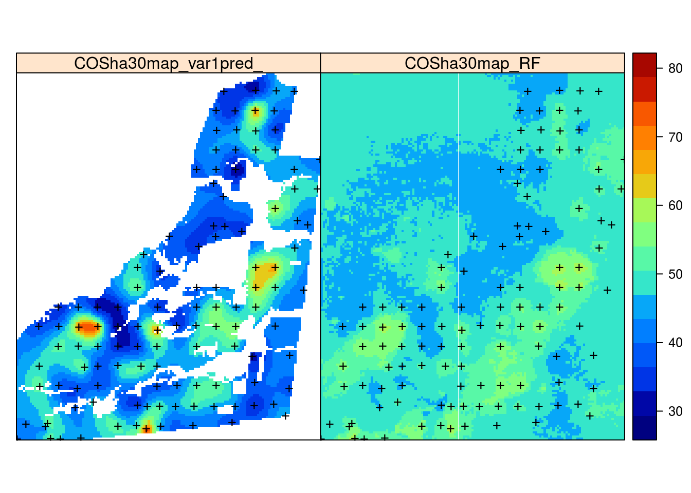
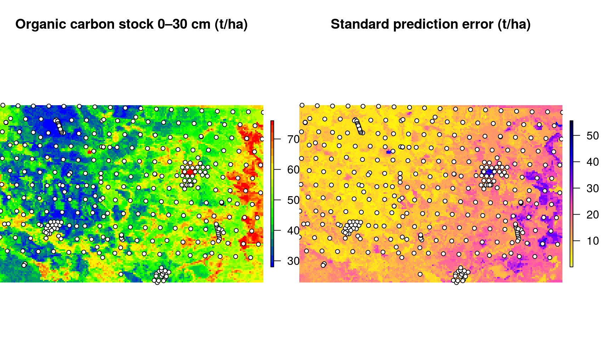
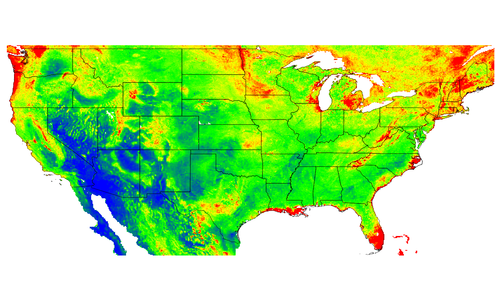
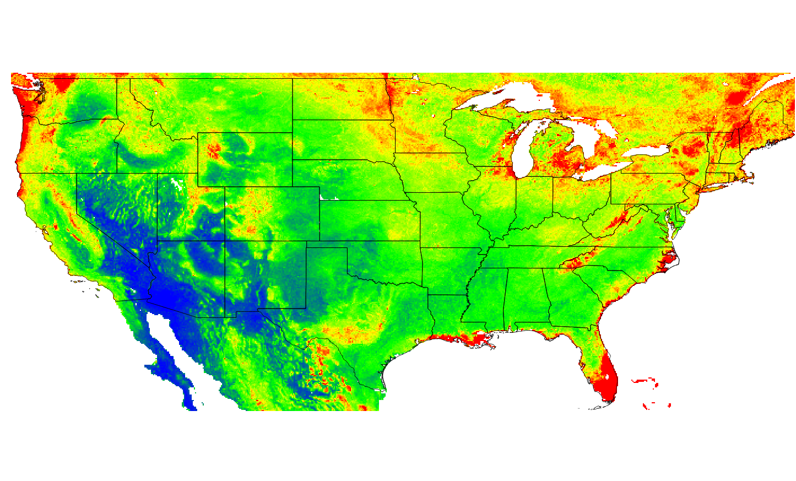

<!DOCTYPE html>
<html >

<head>

  <meta charset="UTF-8">
  <meta http-equiv="X-UA-Compatible" content="IE=edge">
  <title>Predictive Soil Mapping with R</title>
  <meta name="description" content="Predictive Soil Mapping aims at producing most accurate, most objective, and most usable maps of soil variables by using state-of-the-art Statistical and Machine Learning methods. This books explains how to implement various soil mapping procedures in R.">
  <meta name="generator" content="bookdown 0.5 and GitBook 2.6.7">

  <meta property="og:title" content="Predictive Soil Mapping with R" />
  <meta property="og:type" content="book" />
  <meta property="og:url" content="http://soilmapper.org" />
  <meta property="og:image" content="http://soilmapper.orgfigures/f0_web.png" />
  <meta property="og:description" content="Predictive Soil Mapping aims at producing most accurate, most objective, and most usable maps of soil variables by using state-of-the-art Statistical and Machine Learning methods. This books explains how to implement various soil mapping procedures in R." />
  <meta name="github-repo" content="envirometrix/PredictiveSoilMapping" />

  <meta name="twitter:card" content="summary" />
  <meta name="twitter:title" content="Predictive Soil Mapping with R" />
  <meta name="twitter:site" content="@tom_hengl" />
  <meta name="twitter:description" content="Predictive Soil Mapping aims at producing most accurate, most objective, and most usable maps of soil variables by using state-of-the-art Statistical and Machine Learning methods. This books explains how to implement various soil mapping procedures in R." />
  <meta name="twitter:image" content="http://soilmapper.orgfigures/f0_web.png" />

<meta name="author" content="Tomislav Hengl">


<meta name="date" content="2018-06-06">

  <meta name="viewport" content="width=device-width, initial-scale=1">
  <meta name="apple-mobile-web-app-capable" content="yes">
  <meta name="apple-mobile-web-app-status-bar-style" content="black">
  
  
<link rel="prev" href="soilmapping-using-mla.html">
<link rel="next" href="references.html">
<script src="libs/jquery-2.2.3/jquery.min.js"></script>
<link href="libs/gitbook-2.6.7/css/style.css" rel="stylesheet" />
<link href="libs/gitbook-2.6.7/css/plugin-bookdown.css" rel="stylesheet" />
<link href="libs/gitbook-2.6.7/css/plugin-highlight.css" rel="stylesheet" />
<link href="libs/gitbook-2.6.7/css/plugin-search.css" rel="stylesheet" />
<link href="libs/gitbook-2.6.7/css/plugin-fontsettings.css" rel="stylesheet" />


<style type="text/css">
div.sourceCode { overflow-x: auto; }
table.sourceCode, tr.sourceCode, td.lineNumbers, td.sourceCode {
  margin: 0; padding: 0; vertical-align: baseline; border: none; }
table.sourceCode { width: 100%; line-height: 100%; }
td.lineNumbers { text-align: right; padding-right: 4px; padding-left: 4px; color: #aaaaaa; border-right: 1px solid #aaaaaa; }
td.sourceCode { padding-left: 5px; }
code > span.kw { color: #007020; font-weight: bold; } /* Keyword */
code > span.dt { color: #902000; } /* DataType */
code > span.dv { color: #40a070; } /* DecVal */
code > span.bn { color: #40a070; } /* BaseN */
code > span.fl { color: #40a070; } /* Float */
code > span.ch { color: #4070a0; } /* Char */
code > span.st { color: #4070a0; } /* String */
code > span.co { color: #60a0b0; font-style: italic; } /* Comment */
code > span.ot { color: #007020; } /* Other */
code > span.al { color: #ff0000; font-weight: bold; } /* Alert */
code > span.fu { color: #06287e; } /* Function */
code > span.er { color: #ff0000; font-weight: bold; } /* Error */
code > span.wa { color: #60a0b0; font-weight: bold; font-style: italic; } /* Warning */
code > span.cn { color: #880000; } /* Constant */
code > span.sc { color: #4070a0; } /* SpecialChar */
code > span.vs { color: #4070a0; } /* VerbatimString */
code > span.ss { color: #bb6688; } /* SpecialString */
code > span.im { } /* Import */
code > span.va { color: #19177c; } /* Variable */
code > span.cf { color: #007020; font-weight: bold; } /* ControlFlow */
code > span.op { color: #666666; } /* Operator */
code > span.bu { } /* BuiltIn */
code > span.ex { } /* Extension */
code > span.pp { color: #bc7a00; } /* Preprocessor */
code > span.at { color: #7d9029; } /* Attribute */
code > span.do { color: #ba2121; font-style: italic; } /* Documentation */
code > span.an { color: #60a0b0; font-weight: bold; font-style: italic; } /* Annotation */
code > span.cv { color: #60a0b0; font-weight: bold; font-style: italic; } /* CommentVar */
code > span.in { color: #60a0b0; font-weight: bold; font-style: italic; } /* Information */
</style>

<link rel="stylesheet" href="css/style.css" type="text/css" />
<link rel="stylesheet" href="style.css" type="text/css" />
</head>

<body>


  <div class="book without-animation with-summary font-size-2 font-family-1" data-basepath=".">

    <div class="book-summary">
      <nav role="navigation">

<ul class="summary">
<li><a href="./">Predictive Soil Mapping with R</a></li>

<li class="divider"></li>
<li class="chapter" data-level="" data-path="index.html"><a href="index.html"><i class="fa fa-check"></i>Predictive Soil Mapping for advanced R users</a><ul>
<li class="chapter" data-level="" data-path="index.html"><a href="index.html#editors"><i class="fa fa-check"></i>Editors</a></li>
</ul></li>
<li class="chapter" data-level="" data-path="preface.html"><a href="preface.html"><i class="fa fa-check"></i>Preface</a><ul>
<li class="chapter" data-level="" data-path="preface.html"><a href="preface.html#connected-publications"><i class="fa fa-check"></i>Connected publications</a></li>
<li class="chapter" data-level="" data-path="preface.html"><a href="preface.html#contributions"><i class="fa fa-check"></i>Contributions</a></li>
<li class="chapter" data-level="" data-path="preface.html"><a href="preface.html#reproducibility"><i class="fa fa-check"></i>Reproducibility</a></li>
<li class="chapter" data-level="" data-path="preface.html"><a href="preface.html#acknowledgements"><i class="fa fa-check"></i>Acknowledgements</a></li>
</ul></li>
<li class="chapter" data-level="1" data-path="soil-resource-inventories-and-soil-maps.html"><a href="soil-resource-inventories-and-soil-maps.html"><i class="fa fa-check"></i><b>1</b> Soil resource inventories and soil maps</a><ul>
<li class="chapter" data-level="1.1" data-path="soil-resource-inventories-and-soil-maps.html"><a href="soil-resource-inventories-and-soil-maps.html#introduction"><i class="fa fa-check"></i><b>1.1</b> Introduction</a></li>
<li class="chapter" data-level="1.2" data-path="soil-resource-inventories-and-soil-maps.html"><a href="soil-resource-inventories-and-soil-maps.html#soils-and-soil-inventories"><i class="fa fa-check"></i><b>1.2</b> Soils and soil inventories</a><ul>
<li class="chapter" data-level="1.2.1" data-path="soil-resource-inventories-and-soil-maps.html"><a href="soil-resource-inventories-and-soil-maps.html#soil-a-definition"><i class="fa fa-check"></i><b>1.2.1</b> Soil: a definition</a></li>
<li class="chapter" data-level="1.2.2" data-path="soil-resource-inventories-and-soil-maps.html"><a href="soil-resource-inventories-and-soil-maps.html#soil-variables"><i class="fa fa-check"></i><b>1.2.2</b> Soil variables</a></li>
<li class="chapter" data-level="1.2.3" data-path="soil-resource-inventories-and-soil-maps.html"><a href="soil-resource-inventories-and-soil-maps.html#primary-and-secondary-soil-variables"><i class="fa fa-check"></i><b>1.2.3</b> Primary and secondary soil variables</a></li>
</ul></li>
<li class="chapter" data-level="1.3" data-path="soil-resource-inventories-and-soil-maps.html"><a href="soil-resource-inventories-and-soil-maps.html#soil-mapping"><i class="fa fa-check"></i><b>1.3</b> Soil mapping</a><ul>
<li class="chapter" data-level="1.3.1" data-path="soil-resource-inventories-and-soil-maps.html"><a href="soil-resource-inventories-and-soil-maps.html#what-are-soil-resource-inventories"><i class="fa fa-check"></i><b>1.3.1</b> What are soil resource inventories?</a></li>
<li class="chapter" data-level="1.3.2" data-path="soil-resource-inventories-and-soil-maps.html"><a href="soil-resource-inventories-and-soil-maps.html#soil-mapping-approaches-and-concepts"><i class="fa fa-check"></i><b>1.3.2</b> Soil mapping approaches and concepts</a></li>
<li class="chapter" data-level="1.3.3" data-path="soil-resource-inventories-and-soil-maps.html"><a href="soil-resource-inventories-and-soil-maps.html#soil-mapping-theory"><i class="fa fa-check"></i><b>1.3.3</b> Theoretical basis of soil mapping: in context of the universal model of spatial variation</a></li>
<li class="chapter" data-level="1.3.4" data-path="soil-resource-inventories-and-soil-maps.html"><a href="soil-resource-inventories-and-soil-maps.html#conventional-mapping"><i class="fa fa-check"></i><b>1.3.4</b> Traditional (conventional) soil mapping</a></li>
<li class="chapter" data-level="1.3.5" data-path="soil-resource-inventories-and-soil-maps.html"><a href="soil-resource-inventories-and-soil-maps.html#variants-of-soil-maps"><i class="fa fa-check"></i><b>1.3.5</b> Variants of soil maps</a></li>
<li class="chapter" data-level="1.3.6" data-path="soil-resource-inventories-and-soil-maps.html"><a href="soil-resource-inventories-and-soil-maps.html#pedometric-mapping"><i class="fa fa-check"></i><b>1.3.6</b> Predictive and Automated soil mapping</a></li>
<li class="chapter" data-level="1.3.7" data-path="soil-resource-inventories-and-soil-maps.html"><a href="soil-resource-inventories-and-soil-maps.html#comparison-conventional-pm"><i class="fa fa-check"></i><b>1.3.7</b> Comparison of conventional and pedometric soil mapping</a></li>
<li class="chapter" data-level="1.3.8" data-path="soil-resource-inventories-and-soil-maps.html"><a href="soil-resource-inventories-and-soil-maps.html#top-down"><i class="fa fa-check"></i><b>1.3.8</b> Top-down versus bottom-up approaches: subdivision versus agglomeration</a></li>
</ul></li>
<li class="chapter" data-level="1.4" data-path="soil-resource-inventories-and-soil-maps.html"><a href="soil-resource-inventories-and-soil-maps.html#sources-of-soil-data-for-soil-mapping"><i class="fa fa-check"></i><b>1.4</b> Sources of soil data for soil mapping</a><ul>
<li class="chapter" data-level="1.4.1" data-path="soil-resource-inventories-and-soil-maps.html"><a href="soil-resource-inventories-and-soil-maps.html#soil-data-sources-targeted-by-psm"><i class="fa fa-check"></i><b>1.4.1</b> Soil data sources targeted by PSM</a></li>
<li class="chapter" data-level="1.4.2" data-path="soil-resource-inventories-and-soil-maps.html"><a href="soil-resource-inventories-and-soil-maps.html#field-observations"><i class="fa fa-check"></i><b>1.4.2</b> Field observations of soil properties</a></li>
<li class="chapter" data-level="1.4.3" data-path="soil-resource-inventories-and-soil-maps.html"><a href="soil-resource-inventories-and-soil-maps.html#legacy-soil-profile-data"><i class="fa fa-check"></i><b>1.4.3</b> Legacy soil profile data</a></li>
<li class="chapter" data-level="1.4.4" data-path="soil-resource-inventories-and-soil-maps.html"><a href="soil-resource-inventories-and-soil-maps.html#soil-covariates"><i class="fa fa-check"></i><b>1.4.4</b> Soil covariates</a></li>
<li class="chapter" data-level="1.4.5" data-path="soil-resource-inventories-and-soil-maps.html"><a href="soil-resource-inventories-and-soil-maps.html#soil-delineations"><i class="fa fa-check"></i><b>1.4.5</b> Soil delineations</a></li>
<li class="chapter" data-level="1.4.6" data-path="soil-resource-inventories-and-soil-maps.html"><a href="soil-resource-inventories-and-soil-maps.html#advantages-and-disadvantages-of-using-soil-delineations"><i class="fa fa-check"></i><b>1.4.6</b> Advantages and disadvantages of using soil delineations</a></li>
<li class="chapter" data-level="1.4.7" data-path="soil-resource-inventories-and-soil-maps.html"><a href="soil-resource-inventories-and-soil-maps.html#accuracy-of-conventional-soil-polygon-maps"><i class="fa fa-check"></i><b>1.4.7</b> Accuracy of conventional soil polygon maps</a></li>
<li class="chapter" data-level="1.4.8" data-path="soil-resource-inventories-and-soil-maps.html"><a href="soil-resource-inventories-and-soil-maps.html#tacit-knowledge"><i class="fa fa-check"></i><b>1.4.8</b> Legacy soil expertise (tacit knowledge)</a></li>
<li class="chapter" data-level="1.4.9" data-path="soil-resource-inventories-and-soil-maps.html"><a href="soil-resource-inventories-and-soil-maps.html#pseudo-observations"><i class="fa fa-check"></i><b>1.4.9</b> Pseudo-observations</a></li>
</ul></li>
<li class="chapter" data-level="1.5" data-path="soil-resource-inventories-and-soil-maps.html"><a href="soil-resource-inventories-and-soil-maps.html#soil-databases"><i class="fa fa-check"></i><b>1.5</b> Soil databases and soil information systems</a><ul>
<li class="chapter" data-level="1.5.1" data-path="soil-resource-inventories-and-soil-maps.html"><a href="soil-resource-inventories-and-soil-maps.html#soil-databases"><i class="fa fa-check"></i><b>1.5.1</b> Soil databases</a></li>
<li class="chapter" data-level="1.5.2" data-path="soil-resource-inventories-and-soil-maps.html"><a href="soil-resource-inventories-and-soil-maps.html#soil-information-system"><i class="fa fa-check"></i><b>1.5.2</b> Soil Information System</a></li>
<li class="chapter" data-level="1.5.3" data-path="soil-resource-inventories-and-soil-maps.html"><a href="soil-resource-inventories-and-soil-maps.html#soil-information-users"><i class="fa fa-check"></i><b>1.5.3</b> Soil information users</a></li>
<li class="chapter" data-level="1.5.4" data-path="soil-resource-inventories-and-soil-maps.html"><a href="soil-resource-inventories-and-soil-maps.html#usability-of-soil-geographical-database"><i class="fa fa-check"></i><b>1.5.4</b> Usability of soil geographical database</a></li>
</ul></li>
<li class="chapter" data-level="1.6" data-path="soil-resource-inventories-and-soil-maps.html"><a href="soil-resource-inventories-and-soil-maps.html#uncertainty-soil-variables"><i class="fa fa-check"></i><b>1.6</b> Uncertainty of soil variables</a><ul>
<li class="chapter" data-level="1.6.1" data-path="soil-resource-inventories-and-soil-maps.html"><a href="soil-resource-inventories-and-soil-maps.html#basic-concepts"><i class="fa fa-check"></i><b>1.6.1</b> Basic concepts</a></li>
<li class="chapter" data-level="1.6.2" data-path="soil-resource-inventories-and-soil-maps.html"><a href="soil-resource-inventories-and-soil-maps.html#sources-uncertainty"><i class="fa fa-check"></i><b>1.6.2</b> Sources of uncertainty</a></li>
<li class="chapter" data-level="1.6.3" data-path="soil-resource-inventories-and-soil-maps.html"><a href="soil-resource-inventories-and-soil-maps.html#quantifying-the-uncertainty-in-soil-data-products"><i class="fa fa-check"></i><b>1.6.3</b> Quantifying the uncertainty in soil data products</a></li>
<li class="chapter" data-level="1.6.4" data-path="soil-resource-inventories-and-soil-maps.html"><a href="soil-resource-inventories-and-soil-maps.html#common-uncertainty-levels-in-soil-maps"><i class="fa fa-check"></i><b>1.6.4</b> Common uncertainty levels in soil maps</a></li>
</ul></li>
<li class="chapter" data-level="1.7" data-path="soil-resource-inventories-and-soil-maps.html"><a href="soil-resource-inventories-and-soil-maps.html#summary-and-conclusions"><i class="fa fa-check"></i><b>1.7</b> Summary and conclusions</a></li>
</ul></li>
<li class="chapter" data-level="2" data-path="software.html"><a href="software.html"><i class="fa fa-check"></i><b>2</b> Software installation and first steps</a><ul>
<li class="chapter" data-level="2.1" data-path="software.html"><a href="software.html#list-of-software-in-use"><i class="fa fa-check"></i><b>2.1</b> List of software in use</a></li>
<li class="chapter" data-level="2.2" data-path="software.html"><a href="software.html#installing-software-on-ubuntu-os"><i class="fa fa-check"></i><b>2.2</b> Installing software on Ubuntu OS</a></li>
<li class="chapter" data-level="2.3" data-path="software.html"><a href="software.html#Rstudio"><i class="fa fa-check"></i><b>2.3</b> RStudio</a></li>
<li class="chapter" data-level="2.4" data-path="software.html"><a href="software.html#plotkml-and-gsif-packages"><i class="fa fa-check"></i><b>2.4</b> plotKML and GSIF packages</a></li>
<li class="chapter" data-level="2.5" data-path="software.html"><a href="software.html#connecting-r-and-saga-gis"><i class="fa fa-check"></i><b>2.5</b> Connecting R and SAGA GIS</a></li>
<li class="chapter" data-level="2.6" data-path="software.html"><a href="software.html#connecting-r-and-gdal"><i class="fa fa-check"></i><b>2.6</b> Connecting R and GDAL</a></li>
</ul></li>
<li class="chapter" data-level="3" data-path="soil-resource-inventories-and-soil-maps.html"><a href="soil-resource-inventories-and-soil-maps.html#soil-variables"><i class="fa fa-check"></i><b>3</b> Soil observations and variables</a><ul>
<li class="chapter" data-level="3.0.1" data-path="soil-variables.html"><a href="soil-variables.html"><i class="fa fa-check"></i><b>3.0.1</b> Types of soil observations</a></li>
<li class="chapter" data-level="3.0.2" data-path="soil-variables.html"><a href="soil-variables.html#soil-properties-of-interest-for-global-soil-mapping"><i class="fa fa-check"></i><b>3.0.2</b> Soil properties of interest for global soil mapping</a></li>
<li class="chapter" data-level="3.0.3" data-path="soil-variables.html"><a href="soil-variables.html#reference-methods"><i class="fa fa-check"></i><b>3.0.3</b> Reference methods</a></li>
<li class="chapter" data-level="3.0.4" data-path="soil-variables.html"><a href="soil-variables.html#standard-soil-variables-of-interest-for-soil-mapping"><i class="fa fa-check"></i><b>3.0.4</b> Standard soil variables of interest for soil mapping</a></li>
<li class="chapter" data-level="3.1" data-path="soil-variables.html"><a href="soil-variables.html#descriptive-soil-profile-observations"><i class="fa fa-check"></i><b>3.1</b> Descriptive soil profile observations</a><ul>
<li class="chapter" data-level="3.1.1" data-path="soil-variables.html"><a href="soil-variables.html#depth-to-bedrock"><i class="fa fa-check"></i><b>3.1.1</b> Depth to bedrock</a></li>
<li class="chapter" data-level="3.1.2" data-path="soil-variables.html"><a href="soil-variables.html#effective-soil-depth-and-rooting-depth"><i class="fa fa-check"></i><b>3.1.2</b> Effective soil depth and rooting depth</a></li>
</ul></li>
<li class="chapter" data-level="3.2" data-path="soil-variables.html"><a href="soil-variables.html#chemical-soil-properties"><i class="fa fa-check"></i><b>3.2</b> Chemical soil properties</a><ul>
<li class="chapter" data-level="3.2.1" data-path="soil-variables.html"><a href="soil-variables.html#soil-organic-carbon"><i class="fa fa-check"></i><b>3.2.1</b> Soil organic carbon</a></li>
<li class="chapter" data-level="3.2.2" data-path="soil-variables.html"><a href="soil-variables.html#soil-ph"><i class="fa fa-check"></i><b>3.2.2</b> Soil pH</a></li>
<li class="chapter" data-level="3.2.3" data-path="soil-variables.html"><a href="soil-variables.html#soil-nutrients"><i class="fa fa-check"></i><b>3.2.3</b> Soil nutrients</a></li>
</ul></li>
<li class="chapter" data-level="3.3" data-path="soil-variables.html"><a href="soil-variables.html#physical-and-hydrological-soil-properties"><i class="fa fa-check"></i><b>3.3</b> Physical and hydrological soil properties</a><ul>
<li class="chapter" data-level="3.3.1" data-path="soil-variables.html"><a href="soil-variables.html#coarse-fragments"><i class="fa fa-check"></i><b>3.3.1</b> Coarse fragments</a></li>
<li class="chapter" data-level="3.3.2" data-path="soil-variables.html"><a href="soil-variables.html#particle-size-class-distribution-sand-silt-and-clay"><i class="fa fa-check"></i><b>3.3.2</b> Particle size class distribution: sand, silt and clay</a></li>
<li class="chapter" data-level="3.3.3" data-path="soil-variables.html"><a href="soil-variables.html#bulk-density"><i class="fa fa-check"></i><b>3.3.3</b> Bulk density</a></li>
<li class="chapter" data-level="3.3.4" data-path="soil-variables.html"><a href="soil-variables.html#soil-organic-carbon-stock"><i class="fa fa-check"></i><b>3.3.4</b> Soil organic carbon stock</a></li>
<li class="chapter" data-level="3.3.5" data-path="soil-variables.html"><a href="soil-variables.html#available-water-capacity"><i class="fa fa-check"></i><b>3.3.5</b> Available Water Capacity</a></li>
</ul></li>
<li class="chapter" data-level="3.4" data-path="soil-variables.html"><a href="soil-variables.html#harmonisation-of-soil-data-and-pedo-transfer-functions"><i class="fa fa-check"></i><b>3.4</b> Harmonisation of soil data and pedo-transfer functions</a><ul>
<li class="chapter" data-level="3.4.1" data-path="soil-variables.html"><a href="soil-variables.html#basic-concepts-of-harmonisation-of-soil-property-values"><i class="fa fa-check"></i><b>3.4.1</b> Basic concepts of harmonisation of soil property values</a></li>
<li class="chapter" data-level="3.4.2" data-path="soil-variables.html"><a href="soil-variables.html#example-of-harmonization-using-texture-by-hand-classes"><i class="fa fa-check"></i><b>3.4.2</b> Example of harmonization using texture-by-hand classes</a></li>
</ul></li>
<li class="chapter" data-level="3.5" data-path="soil-variables.html"><a href="soil-variables.html#soil-class-data"><i class="fa fa-check"></i><b>3.5</b> Soil class data</a><ul>
<li class="chapter" data-level="3.5.1" data-path="soil-variables.html"><a href="soil-variables.html#soil-types"><i class="fa fa-check"></i><b>3.5.1</b> Soil types</a></li>
<li class="chapter" data-level="3.5.2" data-path="soil-variables.html"><a href="soil-variables.html#other-factor-type-variables"><i class="fa fa-check"></i><b>3.5.2</b> Other factor-type variables</a></li>
</ul></li>
<li class="chapter" data-level="3.6" data-path="soil-variables.html"><a href="soil-variables.html#importing-and-formatting-soil-data-in-r"><i class="fa fa-check"></i><b>3.6</b> Importing and formatting soil data in R</a><ul>
<li class="chapter" data-level="3.6.1" data-path="soil-variables.html"><a href="soil-variables.html#converting-texture-by-hand-classes-to-fractions"><i class="fa fa-check"></i><b>3.6.1</b> Converting texture-by-hand classes to fractions</a></li>
</ul></li>
<li class="chapter" data-level="3.7" data-path="soil-variables.html"><a href="soil-variables.html#converting-munsell-color-codes-to-other-color-systems"><i class="fa fa-check"></i><b>3.7</b> Converting Munsell color codes to other color systems</a></li>
<li class="chapter" data-level="3.8" data-path="soil-variables.html"><a href="soil-variables.html#mla-ptfs"><i class="fa fa-check"></i><b>3.8</b> Using Machine Learning to build Pedo-Transfer-Functions</a><ul>
<li class="chapter" data-level="3.8.1" data-path="soil-variables.html"><a href="soil-variables.html#ptf-for-bulk-density"><i class="fa fa-check"></i><b>3.8.1</b> PTF for Bulk Density</a></li>
<li class="chapter" data-level="3.8.2" data-path="soil-variables.html"><a href="soil-variables.html#ptf-for-correlating-classification-systems"><i class="fa fa-check"></i><b>3.8.2</b> PTF for correlating classification systems</a></li>
</ul></li>
<li class="chapter" data-level="3.9" data-path="soil-variables.html"><a href="soil-variables.html#summary-points"><i class="fa fa-check"></i><b>3.9</b> Summary points</a></li>
</ul></li>
<li class="chapter" data-level="4" data-path="soil-covs-chapter.html"><a href="soil-covs-chapter.html"><i class="fa fa-check"></i><b>4</b> Preparation of soil covariates for soil mapping</a><ul>
<li class="chapter" data-level="4.1" data-path="soil-covs-chapter.html"><a href="soil-covs-chapter.html#soil-covariate-data-sources"><i class="fa fa-check"></i><b>4.1</b> Soil covariate data sources</a><ul>
<li class="chapter" data-level="4.1.1" data-path="soil-covs-chapter.html"><a href="soil-covs-chapter.html#soil-covs-30m"><i class="fa fa-check"></i><b>4.1.1</b> Soil covariate data sources (30–100 m resolution)</a></li>
<li class="chapter" data-level="4.1.2" data-path="soil-covs-chapter.html"><a href="soil-covs-chapter.html#soil-covs-250m"><i class="fa fa-check"></i><b>4.1.2</b> Soil covariate data sources (250 m resolution or coarser)</a></li>
</ul></li>
<li class="chapter" data-level="4.2" data-path="soil-covs-chapter.html"><a href="soil-covs-chapter.html#preparing-soil-covariate-layers"><i class="fa fa-check"></i><b>4.2</b> Preparing soil covariate layers</a><ul>
<li class="chapter" data-level="4.2.1" data-path="soil-covs-chapter.html"><a href="soil-covs-chapter.html#converting-polygon-maps-to-rasters"><i class="fa fa-check"></i><b>4.2.1</b> Converting polygon maps to rasters</a></li>
<li class="chapter" data-level="4.2.2" data-path="soil-covs-chapter.html"><a href="soil-covs-chapter.html#downscaling-upscaling"><i class="fa fa-check"></i><b>4.2.2</b> Downscaling or upscaling (aggregating) rasters</a></li>
<li class="chapter" data-level="4.2.3" data-path="soil-covs-chapter.html"><a href="soil-covs-chapter.html#deriving-dem-parameters-using-saga-gis"><i class="fa fa-check"></i><b>4.2.3</b> Deriving DEM parameters using SAGA GIS</a></li>
<li class="chapter" data-level="4.2.4" data-path="soil-covs-chapter.html"><a href="soil-covs-chapter.html#filtering-out-missing-pixels-and-artifacts"><i class="fa fa-check"></i><b>4.2.4</b> Filtering out missing pixels and artifacts</a></li>
<li class="chapter" data-level="4.2.5" data-path="soil-covs-chapter.html"><a href="soil-covs-chapter.html#overlaying-and-subsetting-raster-stacks-and-points"><i class="fa fa-check"></i><b>4.2.5</b> Overlaying and subsetting raster stacks and points</a></li>
<li class="chapter" data-level="4.2.6" data-path="soil-covs-chapter.html"><a href="soil-covs-chapter.html#working-with-larger-rasters"><i class="fa fa-check"></i><b>4.2.6</b> Working with large(r) rasters</a></li>
</ul></li>
<li class="chapter" data-level="4.3" data-path="soil-covs-chapter.html"><a href="soil-covs-chapter.html#summary-points-1"><i class="fa fa-check"></i><b>4.3</b> Summary points</a></li>
</ul></li>
<li class="chapter" data-level="5" data-path="statistical-theory.html"><a href="statistical-theory.html"><i class="fa fa-check"></i><b>5</b> Statistical theory for predictive soil mapping</a><ul>
<li class="chapter" data-level="5.1" data-path="statistical-theory.html"><a href="statistical-theory.html#aspects-variability"><i class="fa fa-check"></i><b>5.1</b> Aspects of spatial variability of soil variables</a><ul>
<li class="chapter" data-level="5.1.1" data-path="statistical-theory.html"><a href="statistical-theory.html#modelling-soil-variability"><i class="fa fa-check"></i><b>5.1.1</b> Modelling soil variability</a></li>
<li class="chapter" data-level="5.1.2" data-path="statistical-theory.html"><a href="statistical-theory.html#umsv"><i class="fa fa-check"></i><b>5.1.2</b> Universal model of soil variation</a></li>
<li class="chapter" data-level="5.1.3" data-path="statistical-theory.html"><a href="statistical-theory.html#soil-depth-models"><i class="fa fa-check"></i><b>5.1.3</b> Modelling the variation of soil with depth</a></li>
<li class="chapter" data-level="5.1.4" data-path="statistical-theory.html"><a href="statistical-theory.html#vertical-aggregation"><i class="fa fa-check"></i><b>5.1.4</b> Vertical aggregation of soil properties</a></li>
</ul></li>
<li class="chapter" data-level="5.2" data-path="statistical-theory.html"><a href="statistical-theory.html#spatial-prediction-of-soil-variables"><i class="fa fa-check"></i><b>5.2</b> Spatial prediction of soil variables</a><ul>
<li class="chapter" data-level="5.2.1" data-path="statistical-theory.html"><a href="statistical-theory.html#main-principles"><i class="fa fa-check"></i><b>5.2.1</b> Main principles</a></li>
<li class="chapter" data-level="5.2.2" data-path="statistical-theory.html"><a href="statistical-theory.html#soil-sampling"><i class="fa fa-check"></i><b>5.2.2</b> Soil sampling</a></li>
<li class="chapter" data-level="5.2.3" data-path="statistical-theory.html"><a href="statistical-theory.html#sec:expertsystems"><i class="fa fa-check"></i><b>5.2.3</b> Knowledge-driven soil mapping</a></li>
<li class="chapter" data-level="5.2.4" data-path="statistical-theory.html"><a href="statistical-theory.html#regression-kriging"><i class="fa fa-check"></i><b>5.2.4</b> Geostatistics-driven soil mapping (pedometric mapping)</a></li>
<li class="chapter" data-level="5.2.5" data-path="statistical-theory.html"><a href="statistical-theory.html#RK-generic"><i class="fa fa-check"></i><b>5.2.5</b> Regression-kriging (generic model)</a></li>
<li class="chapter" data-level="5.2.6" data-path="statistical-theory.html"><a href="statistical-theory.html#spatial-prediction-using-multiple-linear-regression"><i class="fa fa-check"></i><b>5.2.6</b> Spatial Prediction using multiple linear regression</a></li>
<li class="chapter" data-level="5.2.7" data-path="statistical-theory.html"><a href="statistical-theory.html#universal-kriging-prediction-error"><i class="fa fa-check"></i><b>5.2.7</b> Universal kriging prediction error</a></li>
<li class="chapter" data-level="5.2.8" data-path="statistical-theory.html"><a href="statistical-theory.html#regression-kriging-examples"><i class="fa fa-check"></i><b>5.2.8</b> Regression-kriging examples</a></li>
<li class="chapter" data-level="5.2.9" data-path="statistical-theory.html"><a href="statistical-theory.html#regression-kriging-examples-using-the-gsif-package"><i class="fa fa-check"></i><b>5.2.9</b> Regression-kriging examples using the GSIF package</a></li>
<li class="chapter" data-level="5.2.10" data-path="statistical-theory.html"><a href="statistical-theory.html#regression-kriging-and-polygon-averaging"><i class="fa fa-check"></i><b>5.2.10</b> Regression-kriging and polygon averaging</a></li>
<li class="chapter" data-level="5.2.11" data-path="statistical-theory.html"><a href="statistical-theory.html#block-support"><i class="fa fa-check"></i><b>5.2.11</b> Predictions at point vs block support</a></li>
<li class="chapter" data-level="5.2.12" data-path="statistical-theory.html"><a href="statistical-theory.html#gstat-sims"><i class="fa fa-check"></i><b>5.2.12</b> Geostatistical simulations</a></li>
<li class="chapter" data-level="5.2.13" data-path="statistical-theory.html"><a href="statistical-theory.html#automated-mapping"><i class="fa fa-check"></i><b>5.2.13</b> Automated mapping</a></li>
<li class="chapter" data-level="5.2.14" data-path="statistical-theory.html"><a href="statistical-theory.html#selecting-spatial-prediction-models"><i class="fa fa-check"></i><b>5.2.14</b> Selecting spatial prediction models</a></li>
<li class="chapter" data-level="5.2.15" data-path="statistical-theory.html"><a href="statistical-theory.html#regression-kriging-3D"><i class="fa fa-check"></i><b>5.2.15</b> 3D regression-kriging</a></li>
<li class="chapter" data-level="5.2.16" data-path="statistical-theory.html"><a href="statistical-theory.html#multiscale"><i class="fa fa-check"></i><b>5.2.16</b> Predicting with multiscale and multisource data</a></li>
</ul></li>
<li class="chapter" data-level="5.3" data-path="statistical-theory.html"><a href="statistical-theory.html#accuracy-assessment"><i class="fa fa-check"></i><b>5.3</b> Accuracy assessment and the mapping efficiency</a><ul>
<li class="chapter" data-level="5.3.1" data-path="statistical-theory.html"><a href="statistical-theory.html#mapping-accuracy"><i class="fa fa-check"></i><b>5.3.1</b> Mapping accuracy and numeric resolution</a></li>
<li class="chapter" data-level="5.3.2" data-path="statistical-theory.html"><a href="statistical-theory.html#accuracy-assessment-methods"><i class="fa fa-check"></i><b>5.3.2</b> Accuracy assessment methods</a></li>
<li class="chapter" data-level="5.3.3" data-path="statistical-theory.html"><a href="statistical-theory.html#cross-validation-and-its-limitations"><i class="fa fa-check"></i><b>5.3.3</b> Cross-validation and its limitations</a></li>
<li class="chapter" data-level="5.3.4" data-path="statistical-theory.html"><a href="statistical-theory.html#accuracy-of-the-predicted-model-uncertainty"><i class="fa fa-check"></i><b>5.3.4</b> Accuracy of the predicted model uncertainty</a></li>
<li class="chapter" data-level="5.3.5" data-path="statistical-theory.html"><a href="statistical-theory.html#derivation-and-interpretation-of-prediction-interval"><i class="fa fa-check"></i><b>5.3.5</b> Derivation and interpretation of prediction interval</a></li>
<li class="chapter" data-level="5.3.6" data-path="statistical-theory.html"><a href="statistical-theory.html#universal-measures-of-mapping-accuracy"><i class="fa fa-check"></i><b>5.3.6</b> Universal measures of mapping accuracy</a></li>
<li class="chapter" data-level="5.3.7" data-path="statistical-theory.html"><a href="statistical-theory.html#mapping-accuracy-and-soil-survey-costs"><i class="fa fa-check"></i><b>5.3.7</b> Mapping accuracy and soil survey costs</a></li>
<li class="chapter" data-level="5.3.8" data-path="statistical-theory.html"><a href="statistical-theory.html#summary-points-2"><i class="fa fa-check"></i><b>5.3.8</b> Summary points</a></li>
</ul></li>
</ul></li>
<li class="chapter" data-level="6" data-path="soilmapping-using-mla.html"><a href="soilmapping-using-mla.html"><i class="fa fa-check"></i><b>6</b> Machine Learning Algorithms for soil mapping</a><ul>
<li class="chapter" data-level="6.1" data-path="soilmapping-using-mla.html"><a href="soilmapping-using-mla.html#spatial-prediction-of-soil-properties-and-classes-using-mlas"><i class="fa fa-check"></i><b>6.1</b> Spatial prediction of soil properties and classes using MLA’s</a><ul>
<li class="chapter" data-level="6.1.1" data-path="soilmapping-using-mla.html"><a href="soilmapping-using-mla.html#loading-the-packages-and-data"><i class="fa fa-check"></i><b>6.1.1</b> Loading the packages and data</a></li>
<li class="chapter" data-level="6.1.2" data-path="soilmapping-using-mla.html"><a href="soilmapping-using-mla.html#spatial-prediction-of-soil-classes-using-mlas"><i class="fa fa-check"></i><b>6.1.2</b> Spatial prediction of soil classes using MLA’s</a></li>
<li class="chapter" data-level="6.1.3" data-path="soilmapping-using-mla.html"><a href="soilmapping-using-mla.html#modelling-numeric-soil-properties-using-h2o"><i class="fa fa-check"></i><b>6.1.3</b> Modelling numeric soil properties using h2o</a></li>
<li class="chapter" data-level="6.1.4" data-path="soilmapping-using-mla.html"><a href="soilmapping-using-mla.html#prediction-3D"><i class="fa fa-check"></i><b>6.1.4</b> Spatial prediction of 3D (numeric) variables</a></li>
<li class="chapter" data-level="6.1.5" data-path="soilmapping-using-mla.html"><a href="soilmapping-using-mla.html#ensemble-predictions-using-h2oensemble"><i class="fa fa-check"></i><b>6.1.5</b> Ensemble predictions using h2oEnsemble</a></li>
</ul></li>
<li class="chapter" data-level="6.2" data-path="soilmapping-using-mla.html"><a href="soilmapping-using-mla.html#a-generic-framework-for-spatial-prediction-using-random-forest"><i class="fa fa-check"></i><b>6.2</b> A generic framework for spatial prediction using Random Forest</a><ul>
<li class="chapter" data-level="6.2.1" data-path="soilmapping-using-mla.html"><a href="soilmapping-using-mla.html#general-principle-of-rfsp"><i class="fa fa-check"></i><b>6.2.1</b> General principle of RFsp</a></li>
<li class="chapter" data-level="6.2.2" data-path="soilmapping-using-mla.html"><a href="soilmapping-using-mla.html#geographical-covariates"><i class="fa fa-check"></i><b>6.2.2</b> Geographical covariates</a></li>
<li class="chapter" data-level="6.2.3" data-path="soilmapping-using-mla.html"><a href="soilmapping-using-mla.html#spatial-prediction-2d-continuous-variable-using-rfsp"><i class="fa fa-check"></i><b>6.2.3</b> Spatial prediction 2D continuous variable using RFsp</a></li>
<li class="chapter" data-level="6.2.4" data-path="soilmapping-using-mla.html"><a href="soilmapping-using-mla.html#spatial-prediction-2d-variable-with-covariates-using-rfsp"><i class="fa fa-check"></i><b>6.2.4</b> Spatial prediction 2D variable with covariates using RFsp</a></li>
<li class="chapter" data-level="6.2.5" data-path="soilmapping-using-mla.html"><a href="soilmapping-using-mla.html#spatial-prediction-of-binomial-variable"><i class="fa fa-check"></i><b>6.2.5</b> Spatial prediction of binomial variable</a></li>
<li class="chapter" data-level="6.2.6" data-path="soilmapping-using-mla.html"><a href="soilmapping-using-mla.html#spatial-prediction-of-soil-types"><i class="fa fa-check"></i><b>6.2.6</b> Spatial prediction of soil types</a></li>
</ul></li>
<li class="chapter" data-level="6.3" data-path="soilmapping-using-mla.html"><a href="soilmapping-using-mla.html#summary-points-3"><i class="fa fa-check"></i><b>6.3</b> Summary points</a></li>
</ul></li>
<li class="chapter" data-level="7" data-path="SOC-chapter.html"><a href="SOC-chapter.html"><i class="fa fa-check"></i><b>7</b> Spatial prediction and assessment of Soil Organic Carbon</a><ul>
<li class="chapter" data-level="7.1" data-path="SOC-chapter.html"><a href="SOC-chapter.html#introduction-1"><i class="fa fa-check"></i><b>7.1</b> Introduction</a></li>
<li class="chapter" data-level="7.2" data-path="SOC-chapter.html"><a href="SOC-chapter.html#measurement-and-derivation-of-soil-organic-carbon"><i class="fa fa-check"></i><b>7.2</b> Measurement and derivation of soil organic carbon</a></li>
<li class="chapter" data-level="7.3" data-path="SOC-chapter.html"><a href="SOC-chapter.html#derivation-of-ocs-and-ocd-using-soil-profile-data"><i class="fa fa-check"></i><b>7.3</b> Derivation of OCS and OCD using soil profile data</a></li>
<li class="chapter" data-level="7.4" data-path="SOC-chapter.html"><a href="SOC-chapter.html#estimation-of-bulk-density-using-a-globally-calibrated-ptf"><i class="fa fa-check"></i><b>7.4</b> Estimation of Bulk Density using a globally-calibrated PTF</a></li>
<li class="chapter" data-level="7.5" data-path="SOC-chapter.html"><a href="SOC-chapter.html#generating-maps-of-ocs"><i class="fa fa-check"></i><b>7.5</b> Generating maps of OCS</a></li>
<li class="chapter" data-level="7.6" data-path="SOC-chapter.html"><a href="SOC-chapter.html#predicting-ocs-from-point-data-the-2d-approach"><i class="fa fa-check"></i><b>7.6</b> Predicting OCS from point data (the 2D approach)</a></li>
<li class="chapter" data-level="7.7" data-path="SOC-chapter.html"><a href="SOC-chapter.html#ocs-3d-approach"><i class="fa fa-check"></i><b>7.7</b> Deriving OCS from soil profile data (the 3D approach)</a></li>
<li class="chapter" data-level="7.8" data-path="SOC-chapter.html"><a href="SOC-chapter.html#deriving-ocs-using-spatiotemporal-models"><i class="fa fa-check"></i><b>7.8</b> Deriving OCS using spatiotemporal models</a></li>
<li class="chapter" data-level="7.9" data-path="SOC-chapter.html"><a href="SOC-chapter.html#summary-points-4"><i class="fa fa-check"></i><b>7.9</b> Summary points</a></li>
</ul></li>
<li class="chapter" data-level="" data-path="references.html"><a href="references.html"><i class="fa fa-check"></i>References</a></li>
<li class="divider"></li>
<li><a href="http://envirometrix.net/staff">T. (Tom) Hengl</a></li>

</ul>

      </nav>
    </div>

    <div class="book-body">
      <div class="body-inner">
        <div class="book-header" role="navigation">
          <h1>
            <i class="fa fa-circle-o-notch fa-spin"></i><a href="./">Predictive Soil Mapping with R</a>
          </h1>
        </div>

        <div class="page-wrapper" tabindex="-1" role="main">
          <div class="page-inner">

            <section class="normal" id="section-">
<div id="SOC-chapter" class="section level1">
<h1><span class="header-section-number">7</span> Spatial prediction and assessment of Soil Organic Carbon</h1>
<p><em>Edited by: Hengl T. &amp; Sanderman J.</em></p>
<div id="introduction-1" class="section level2">
<h2><span class="header-section-number">7.1</span> Introduction</h2>
<p>This chapter has been prepared as a supplementary material for the <span class="citation">Sanderman, Hengl, and Fiske (<a href="references.html#ref-sanderman2018soil">2018</a>)</span> article. We explains how to map Soil Organic Carbon Stocks (OCS) using soil samples (point data). We demonstrate derivation of values both at site level (per profile) and by using raster calculus (per pixel). We also show how to estimate total OCS for an area of interest (which can be a field plot, farm and/or administrative region). For an introduction to soil mapping using Machine Learning Algorithms refer to section <a href="soilmapping-using-mla.html#soilmapping-using-mla">6</a>. To access ISRIC’s global compilation of soil profiles please refer to: <a href="http://www.isric.org/explore/wosis" class="uri">http://www.isric.org/explore/wosis</a>.</p>
</div>
<div id="measurement-and-derivation-of-soil-organic-carbon" class="section level2">
<h2><span class="header-section-number">7.2</span> Measurement and derivation of soil organic carbon</h2>
<p>Carbon below ground can be organic and non-organic or mineral (usually carbonates and bicarbonates) i.e. CaCO<span class="math inline">\(_3\)</span> in the rocks. Organic carbon stock below ground (0–2 m) in terrestrial ecosystems consists of two major components:</p>
<ol style="list-style-type: decimal">
<li>Living organism biomass i.e. mainly:
<ul>
<li>Plant roots,</li>
<li>Microbial biomass <span class="citation">(Xu, Thornton, and Post <a href="references.html#ref-xu2013global">2013</a>)</span>,</li>
</ul></li>
<li>Plant and animal residues at various stages of decomposition (organic matter).</li>
</ol>
<p><span class="citation">Xu, Thornton, and Post (<a href="references.html#ref-xu2013global">2013</a>)</span> have estimated that the global microbial biomass is about 17 Pg C, which is only about 2% of the total organic matter, hence amount of C in microbial biomass can be neglected in comparison to the total stock, although if one would include all living organism and especially tree roots, then the portion of the C in the living organism could be more significant, especially in areas under dense forests.</p>
<p>Soil Organic Carbon Stock (<strong>OCS</strong>) is the mass of soil organic carbon per standard area and for a specific depth interval, usually expressed in kg/m<span class="math inline">\(^2\)</span> or t/ha. It can be derived using (laboratory and/or field) measurement of soil organic carbon content (ORC; expressed in % or g/kg of &lt;2mm mineral earth), taking into account bulk density (BLD), thickness of the soil layer, and volume percentage of coarse fragments (CRF) <span class="citation">(Nelson and Sommers <a href="references.html#ref-Nelson1982">1982</a>; Poeplau, Vos, and Axel <a href="references.html#ref-poeplau2017soil">2017</a>)</span>:</p>
<span class="math display" id="eq:ocs">\[\begin{equation}
{\rm OCS} [{\rm kg/m^2}] = {\rm ORC} [\%] / 100 \cdot {\rm BLD} [{\rm kg/m^3}] \cdot (1- {\rm CRF} [\%]/100) \cdot {\rm HOT} [m]
\tag{7.1}
\end{equation}\]</span>
<p>Note that if one has soil organic carbon content measured in g/kg then one should divide by 1000 instead of 100. The correction for gravel content is necessary because only material less than 2 mm is analyzed for ORC concentration. Ignoring the gravel content migh result in an overestimation of the organic carbon stock. Note also that OCS always refers to a specific depth interval or horizon thickness (HOT), e.g.:</p>
<ul>
<li>kg/m<span class="math inline">\(^2\)</span> for depth 0–30 cm <span class="citation">(Berhongaray and Alvarez <a href="references.html#ref-berhongaray2013ipcc">2013</a>)</span>,</li>
</ul>
<p>Values of OCS in kg/m<span class="math inline">\(^2\)</span> can also be expressed in tons/ha units, in which case simple conversion formula can be applied:</p>
<span class="math display" id="eq:kgm2">\[\begin{equation}
1 \cdot {\rm kg/m^2} = 10 \cdot {\rm tons/ha}
\tag{7.2}
\end{equation}\]</span>
<p>Total OCS for an area of interest can be derived by multiplying OCS by total area e.g.:</p>
<span class="math display" id="eq:tonsha">\[\begin{equation}
120 {\rm tons/ha} \cdot 1 {\rm km^2} = 120 \cdot 100 = 12,000 {\rm tons}
\tag{7.3}
\end{equation}\]</span>
<p>Another way to express soil organic carbon is through <strong>soil organic carbon density</strong> (<strong>OCD</strong> in kg/m<span class="math inline">\(^3\)</span>), which is in fact equivalent to OCS divided by the horizon thickness:</p>
<span class="math display" id="eq:ocd">\[\begin{equation}
{\rm OCD} [{\rm kg/m^3}] = {\rm ORC} [\%]/100 \cdot {\rm BLD} [{\rm kg/m^3}] \cdot (1- {\rm CRF} [\%]/100) = {\rm OCS} / {\rm HOT}
\tag{7.4}
\end{equation}\]</span>
<p>While OCS is a summary measure of SOC always associated with specific depth interval, OCD is a relative measure of soil organic carbon distribution and can be associated to any support size i.e. to arbitrary depth. In principle, OCD (kg/m<span class="math inline">\(^3\)</span>) is strongly correlated with ORC (g/kg) as indicated in the figure below, however, depending on soil mineralogy and coarse fragment content, OCD can be lower or higher than what the smoothed line indicates (notice the range of values around the smoothed line is relatively wide). It is important to understand however, that, as long as ORC, BLD and CRF are known, one can convert the values from ORC to OCD and OCS and vice versa, without loosing any information about the soil organic carbon stock.</p>
<div class="figure" style="text-align: center"><span id="fig:scheme-solum"></span>

<p class="caption">
Figure 3.3: Correlation between soil organic carbon density and soil organic carbon content (displayed on a log-scale) created using a global compilations of soil profile data <span class="citation">(Batjes et al. <a href="references.html#ref-Batjes2017ESSD">2017</a>)</span>. Values 1, 2, 3, 4, 5 and 6 in the plot (log scale) correspond to values 2, 6, 19, 54, 147 and 402. Note that for ORC &gt;12%, the OCD line flattens, which means that, organic carbon density practically stops to increase with the increase of ORC content.
</p>
</div>
<p>In summary, there are four main variables to represent soil organic carbon:</p>
<ol style="list-style-type: decimal">
<li><strong>Soil Organic Carbon fraction or content</strong> (ORC) in g/kg (permille) or dg/kg (percent),</li>
<li><strong>Soil Organic Carbon Density</strong> (OCD) in kg/m<span class="math inline">\(^3\)</span>,</li>
<li><strong>Soil Organic Carbon Stock</strong> (OCS) in kg/m<span class="math inline">\(^2\)</span> or in tons/ha and for the given soil depth interval,</li>
<li><strong>Total Soil Organic Carbon Stock</strong> (TOCS) in million tonnes or Pg i.e. OCS multiplied by surface area,</li>
</ol>
<p>Global estimates of the total soil organic carbon stock are highly variable <span class="citation">(Scharlemann et al. <a href="references.html#ref-Scharlemann2014CM">2014</a>)</span>: the current estimates of the current total soil organic carbon stock range between 800–2100 Pg C (for 0–100 cm), with the median estimate of about 1500 Pg C (for 0–100 cm). This means that the average OCS for 0–100 cm depth interval for the land mask (148,940,000 km<span class="math inline">\(^2\)</span>) is about 11 kg/m<span class="math inline">\(^2\)</span> or 110 tons/ha, and that average soil organic carbon density (OCD) is about 11 kg/m<span class="math inline">\(^3\)</span> (compare to the standard bulk density of fine earth of 1250 kg/m<span class="math inline">\(^3\)</span>); standard OCS for 0–30 cm depth interval is 7 kg/m<span class="math inline">\(^2\)</span> i.e. the average OCD is about 13 kg/m<span class="math inline">\(^3\)</span>.</p>
<div class="rmdnote">
<p>
The average Organic Carbon Stock for 0–100 cm depth interval for the land mask (148,940,000 km<span class="math inline"><em></em><sup>2</sup></span>) is about 11 kg/m<span class="math inline"><em></em><sup>2</sup></span> or 110 tons/ha. The average soil Organic Carbon Density (OCD) is about 11 kg/m<span class="math inline"><em></em><sup>3</sup></span> (compare to the standard bulk density of fine earth of 1250 kg/m<span class="math inline"><em></em><sup>3</sup></span>). Standard Organic Carbon Stock for 0–30 cm depth interval is 7 kg/m<span class="math inline"><em></em><sup>2</sup></span> i.e. the average OCD is about 13 kg/m<span class="math inline"><em></em><sup>3</sup></span>.
</p>
</div>
<p>The distribution of soil organic carbon in the world is, however, highly patchy with large areas with OCS <span class="math inline">\(\ll 100\)</span> tons/ha, and then some <em>pockets</em> of accumulated organic material i.e. organic soil types (histosols) with OCS up to 850tons/ha (for 0–30 cm depth interval). The world’s soil organic matter accumulation areas are usually the following biomes / land cover classes: wetlands and peatlands, mangroves, tundras and taigas.</p>
<p>Land use and agriculture in particular have led to dramatic decreases in soil carbon stocks in last 200+ years (agricultural and industrial revolutions). <span class="citation">Lal (<a href="references.html#ref-Lal2004Science">2004</a>)</span> estimated that approximately 54 Pg C have been added to the atmosphere due to agricultural activities with another 26 Pg C being lost from soils due to erosion. <span class="citation">Wei et al. (<a href="references.html#ref-wei2014global">2014</a>)</span> have estimated that, in average, conversion from forests to various agricultural land results to 30–50% decrease of SOCS. Modelling and monitoring of soil organic carbon dynamics is therefore of increasing importance (see e.g. FAO report <a href="http://www.fao.org/documents/card/en/c/25eaf720-94e4-4f53-8f50-cdfc2487e1f8/">“Unlocking the Potential of Soil Organic Carbon”</a>).</p>
</div>
<div id="derivation-of-ocs-and-ocd-using-soil-profile-data" class="section level2">
<h2><span class="header-section-number">7.3</span> Derivation of OCS and OCD using soil profile data</h2>
<p>As mentioned previously, OCS stock is most commonly derived from measurements of the organic carbon (ORC) content, soil bulk density (BLD) and the volume fraction of gravel (CRF). These are usually sampled either per soil layers or soil <strong>horizons</strong> (a sequence of horizons makes a soil profile), which can refer to variable soil depth intervals i.e. are non-standard. That means that, before one can determine OCS for standard fixed depth intervals (e.g. 0–30 cm or 0–100 cm), values of ORC, BLD and CRF need to be standardized so they refer to common depth intervals.</p>
<p>Consider, for example, the following two real life examples of soil profile data for a standard agricultural soil and an organic soil. In the first example, <a href="http://www.asris.csiro.au/mapping/hyperdocs/NatSoil/399%5EEDGEROI%5Eed079.pdf">profile from Australia</a>, the soil profile data shows:</p>
<div class="sourceCode"><pre class="sourceCode r"><code class="sourceCode r">knitr<span class="op">::</span><span class="kw">kable</span>(
  <span class="kw">head</span>(<span class="kw">read.csv</span>(<span class="st">&quot;extdata/profile_399_EDGEROI_ed079.csv&quot;</span>, <span class="dt">header =</span> <span class="ot">TRUE</span>, <span class="dt">stringsAsFactors =</span> <span class="ot">FALSE</span>), <span class="dv">10</span>), <span class="dt">booktabs =</span> <span class="ot">TRUE</span>,
  <span class="dt">caption =</span> <span class="st">&#39;Laboratory data for a profile *399 EDGEROI ed079* from Australia [@Karssies2011CSIRO].&#39;</span>
)</code></pre></div>
<table>
<caption><span id="tab:profile-edgeroi">Table 7.1: </span>Laboratory data for a profile <em>399 EDGEROI ed079</em> from Australia <span class="citation">(Karssies <a href="references.html#ref-Karssies2011CSIRO">2011</a>)</span>.</caption>
<thead>
<tr class="header">
<th align="right">upper_limit</th>
<th align="right">lower_limit</th>
<th align="right">carbon_content</th>
<th align="right">bulk_density</th>
<th align="right">CF</th>
<th align="right">SOCS</th>
</tr>
</thead>
<tbody>
<tr class="odd">
<td align="right">0</td>
<td align="right">10</td>
<td align="right">8.2</td>
<td align="right">1340</td>
<td align="right">6</td>
<td align="right">1.1</td>
</tr>
<tr class="even">
<td align="right">10</td>
<td align="right">20</td>
<td align="right">7.5</td>
<td align="right">1367</td>
<td align="right">6</td>
<td align="right">1.0</td>
</tr>
<tr class="odd">
<td align="right">20</td>
<td align="right">55</td>
<td align="right">6.1</td>
<td align="right">1382</td>
<td align="right">7</td>
<td align="right">3.0</td>
</tr>
<tr class="even">
<td align="right">55</td>
<td align="right">90</td>
<td align="right">3.3</td>
<td align="right">1433</td>
<td align="right">8</td>
<td align="right">1.7</td>
</tr>
<tr class="odd">
<td align="right">90</td>
<td align="right">116</td>
<td align="right">1.6</td>
<td align="right">1465</td>
<td align="right">8</td>
<td align="right">0.6</td>
</tr>
</tbody>
</table>
<p>Note that BLD variable was not available for described horizons (the original soil profile description / laboratory data indicates that no BLD has been observed for this profile), hence we can at least use the BLD estimated using SoilGrids250m data. It (unfortunately) commonly happens that soil profile observations miss BLD measurements, and hence BLD needs to be generated using a Pedo-Transfer function or extracted from soil maps.</p>
<p>To determine OCS for standard depth intervals 0–30, 0–100 and 0–200 cm, we first fit a mass-preserving spline <span class="citation">(Malone et al. <a href="references.html#ref-Malone2009Geoderma">2009</a>)</span>:</p>
<div class="sourceCode"><pre class="sourceCode r"><code class="sourceCode r"><span class="kw">library</span>(GSIF)
<span class="co">#&gt; GSIF version 0.5-4 (2017-04-25)</span>
<span class="co">#&gt; URL: http://gsif.r-forge.r-project.org/</span>
<span class="kw">library</span>(aqp)
<span class="co">#&gt; This is aqp 1.15</span>
<span class="kw">library</span>(sp)
<span class="kw">library</span>(plyr)
lon =<span class="st"> </span><span class="fl">149.73</span>; lat =<span class="st"> </span><span class="op">-</span><span class="fl">30.09</span>; 
id =<span class="st"> &quot;399_EDGEROI_ed079&quot;</span>; TIMESTRR =<span class="st"> &quot;1987-01-05&quot;</span>
top =<span class="st"> </span><span class="kw">c</span>(<span class="dv">0</span>, <span class="dv">10</span>, <span class="dv">20</span>, <span class="dv">55</span>, <span class="dv">90</span>) 
bottom =<span class="st"> </span><span class="kw">c</span>(<span class="dv">10</span>, <span class="dv">20</span>, <span class="dv">55</span>, <span class="dv">90</span>, <span class="dv">116</span>)
ORC =<span class="st"> </span><span class="kw">c</span>(<span class="fl">8.2</span>, <span class="fl">7.5</span>, <span class="fl">6.1</span>, <span class="fl">3.3</span>, <span class="fl">1.6</span>)
BLD =<span class="st"> </span><span class="kw">c</span>(<span class="dv">1340</span>, <span class="dv">1367</span>, <span class="dv">1382</span>, <span class="dv">1433</span>, <span class="dv">1465</span>)
CRF =<span class="st"> </span><span class="kw">c</span>(<span class="dv">6</span>, <span class="dv">6</span>, <span class="dv">7</span>, <span class="dv">8</span>, <span class="dv">8</span>)
<span class="co">#OCS = OCSKGM(ORC, BLD, CRF, HSIZE=bottom-top)</span>
prof1 &lt;-<span class="st"> </span><span class="kw">join</span>(<span class="kw">data.frame</span>(id, top, bottom, ORC, BLD, CRF), 
               <span class="kw">data.frame</span>(id, lon, lat, TIMESTRR), <span class="dt">type=</span><span class="st">&#39;inner&#39;</span>)
<span class="co">#&gt; Joining by: id</span>
<span class="kw">depths</span>(prof1) &lt;-<span class="st"> </span>id <span class="op">~</span><span class="st"> </span>top <span class="op">+</span><span class="st"> </span>bottom
<span class="co">#&gt; Warning: converting IDs from factor to character</span>
<span class="kw">site</span>(prof1) &lt;-<span class="st"> </span><span class="er">~</span><span class="st"> </span>lon <span class="op">+</span><span class="st"> </span>lat <span class="op">+</span><span class="st"> </span>TIMESTRR
<span class="kw">coordinates</span>(prof1) &lt;-<span class="st"> </span><span class="er">~</span><span class="st"> </span>lon <span class="op">+</span><span class="st"> </span>lat
<span class="kw">proj4string</span>(prof1) &lt;-<span class="st"> </span><span class="kw">CRS</span>(<span class="st">&quot;+proj=longlat +datum=WGS84&quot;</span>)
ORC.s &lt;-<span class="st"> </span><span class="kw">mpspline</span>(prof1, <span class="dt">var.name=</span><span class="st">&quot;ORC&quot;</span>, <span class="dt">d=</span><span class="kw">t</span>(<span class="kw">c</span>(<span class="dv">0</span>,<span class="dv">30</span>,<span class="dv">100</span>,<span class="dv">200</span>)), <span class="dt">vhigh =</span> <span class="dv">2200</span>)
<span class="co">#&gt; Fitting mass preserving splines per profile...</span>
<span class="co">#&gt; </span>
  <span class="op">|</span><span class="st">                                                                       </span>
<span class="st">  </span><span class="er">|</span><span class="st">                                                                 </span><span class="er">|</span><span class="st">   </span><span class="dv">0</span>%
  <span class="op">|</span><span class="st">                                                                       </span>
<span class="st">  </span><span class="er">|=================================================================|</span><span class="st"> </span><span class="dv">100</span>%
BLD.s &lt;-<span class="st"> </span><span class="kw">mpspline</span>(prof1, <span class="dt">var.name=</span><span class="st">&quot;BLD&quot;</span>, <span class="dt">d=</span><span class="kw">t</span>(<span class="kw">c</span>(<span class="dv">0</span>,<span class="dv">30</span>,<span class="dv">100</span>,<span class="dv">200</span>)), <span class="dt">vhigh =</span> <span class="dv">2200</span>)
<span class="co">#&gt; Fitting mass preserving splines per profile...</span>
<span class="co">#&gt; </span>
  <span class="op">|</span><span class="st">                                                                       </span>
<span class="st">  </span><span class="er">|</span><span class="st">                                                                 </span><span class="er">|</span><span class="st">   </span><span class="dv">0</span>%
  <span class="op">|</span><span class="st">                                                                       </span>
<span class="st">  </span><span class="er">|=================================================================|</span><span class="st"> </span><span class="dv">100</span>%
CRF.s &lt;-<span class="st"> </span><span class="kw">mpspline</span>(prof1, <span class="dt">var.name=</span><span class="st">&quot;CRF&quot;</span>, <span class="dt">d=</span><span class="kw">t</span>(<span class="kw">c</span>(<span class="dv">0</span>,<span class="dv">30</span>,<span class="dv">100</span>,<span class="dv">200</span>)), <span class="dt">vhigh =</span> <span class="dv">2200</span>)
<span class="co">#&gt; Fitting mass preserving splines per profile...</span>
<span class="co">#&gt; </span>
  <span class="op">|</span><span class="st">                                                                       </span>
<span class="st">  </span><span class="er">|</span><span class="st">                                                                 </span><span class="er">|</span><span class="st">   </span><span class="dv">0</span>%
  <span class="op">|</span><span class="st">                                                                       </span>
<span class="st">  </span><span class="er">|=================================================================|</span><span class="st"> </span><span class="dv">100</span>%</code></pre></div>
<p>now we can derive OCS for top-soil by using:</p>
<div class="sourceCode"><pre class="sourceCode r"><code class="sourceCode r"><span class="kw">OCSKGM</span>(ORC.s<span class="op">$</span>var.std<span class="op">$</span><span class="st">`</span><span class="dt">0-30 cm</span><span class="st">`</span>, 
       BLD.s<span class="op">$</span>var.std<span class="op">$</span><span class="st">`</span><span class="dt">0-30 cm</span><span class="st">`</span>, 
       CRF.s<span class="op">$</span>var.std<span class="op">$</span><span class="st">`</span><span class="dt">0-30 cm</span><span class="st">`</span>, <span class="dt">HSIZE=</span><span class="dv">30</span>)
<span class="co">#&gt; [1] 2.88</span>
<span class="co">#&gt; attr(,&quot;measurementError&quot;)</span>
<span class="co">#&gt; [1] 3.84</span>
<span class="co">#&gt; attr(,&quot;units&quot;)</span>
<span class="co">#&gt; [1] &quot;kilograms per square-meter&quot;</span></code></pre></div>
<p>and for sub-soil using:</p>
<div class="sourceCode"><pre class="sourceCode r"><code class="sourceCode r"><span class="kw">OCSKGM</span>(ORC.s<span class="op">$</span>var.std<span class="op">$</span><span class="st">`</span><span class="dt">30-100 cm</span><span class="st">`</span>, 
       BLD.s<span class="op">$</span>var.std<span class="op">$</span><span class="st">`</span><span class="dt">30-100 cm</span><span class="st">`</span>, 
       CRF.s<span class="op">$</span>var.std<span class="op">$</span><span class="st">`</span><span class="dt">30-100 cm</span><span class="st">`</span>, <span class="dt">HSIZE=</span><span class="dv">70</span>)
<span class="co">#&gt; [1] 3.62</span>
<span class="co">#&gt; attr(,&quot;measurementError&quot;)</span>
<span class="co">#&gt; [1] 9.18</span>
<span class="co">#&gt; attr(,&quot;units&quot;)</span>
<span class="co">#&gt; [1] &quot;kilograms per square-meter&quot;</span></code></pre></div>
<p>Note that the OCSKGM function requires soil organic carbon content in g/kg. If one has contents measured in % then first multiply the values by 10. Bulk density data should be provided in kg/m3, gravel content in %, and layer depth in cm. Running the OCSKGM function for the Edgeroi profile gives the following estimates of OCS for standard depth intervals (Fig.<a href="SOC-chapter.html#fig:scheme-soc-prof1">7.1</a>):</p>
<ul>
<li><p>0–30 cm: 2.9 kg / m-square</p></li>
<li><p>0–100 cm: 6.5 kg / m-square</p></li>
<li><p>0–200 cm: 8.5 kg / m-square (85 tonnes / ha)</p></li>
</ul>
<p>Value of OCS between 5–35 kg/m<span class="math inline">\(^2\)</span> for 0–100 cm are most common for a variety of mineral soils with e.g. 1–3% of soil organic carbon.</p>
<div class="rmdnote">
<p>
Organic Carbon Stock for standard depths can be determined from legacy for profile data either by fitting spline function to organic carbon, bulk density values, or by aggregating data using simple conversion formulas. Standard mineral soil with 1–3% of soil organic carbon for the 0–100 cm depth interval would have about 5–35 kg/m<span class="math inline"><em></em><sup>2</sup></span> or 50–350 tonnes/ha. An organic soil with &gt;30% of soil organic carbon could have as much as 60–90 kg/m<span class="math inline"><em></em><sup>2</sup></span> for the 0–100 cm depth interval.
</p>
</div>
<p>Note that the measurement error is computed from default uncertainty values (expressed in standard deviations) for organic carbon (10 g/kg), bulk density (100 kg/m3) and coarse fraction content (5%). When these are not provided by the user, the outcome should thus be interpreted with care.</p>
<div class="figure" style="text-align: center"><span id="fig:scheme-soc-prof1"></span>

<p class="caption">
Figure 7.1: Determination of soil organic carbon density and stock for standard depth intervals: example of a mineral soil profile from Australia.
</p>
</div>
<p>In the second example we look at a profile from Canada (a histosol with &gt;40% of organic carbon):</p>
<div class="sourceCode"><pre class="sourceCode r"><code class="sourceCode r">knitr<span class="op">::</span><span class="kw">kable</span>(
  <span class="kw">head</span>(<span class="kw">read.csv</span>(<span class="st">&quot;extdata/profile_CAN_organic.csv&quot;</span>, <span class="dt">header =</span> <span class="ot">TRUE</span>, <span class="dt">stringsAsFactors =</span> <span class="ot">FALSE</span>), <span class="dv">10</span>), <span class="dt">booktabs =</span> <span class="ot">TRUE</span>,
  <span class="dt">caption =</span> <span class="st">&#39;Laboratory data for an organic soil profile from Canada [@shaw2005ecosystem].&#39;</span>
)</code></pre></div>
<table>
<caption><span id="tab:profile-can">Table 7.2: </span>Laboratory data for an organic soil profile from Canada <span class="citation">(Shaw, Bhatti, and Sabourin <a href="references.html#ref-shaw2005ecosystem">2005</a>)</span>.</caption>
<thead>
<tr class="header">
<th align="right">upper_limit</th>
<th align="right">lower_limit</th>
<th align="right">carbon_content</th>
<th align="right">bulk_density</th>
<th align="right">CF</th>
<th align="right">SOCS</th>
</tr>
</thead>
<tbody>
<tr class="odd">
<td align="right">0</td>
<td align="right">31</td>
<td align="right">472</td>
<td align="right">185</td>
<td align="right">5</td>
<td align="right">25.7</td>
</tr>
<tr class="even">
<td align="right">31</td>
<td align="right">61</td>
<td align="right">492</td>
<td align="right">172</td>
<td align="right">6</td>
<td align="right">23.9</td>
</tr>
<tr class="odd">
<td align="right">61</td>
<td align="right">91</td>
<td align="right">487</td>
<td align="right">175</td>
<td align="right">6</td>
<td align="right">24.1</td>
</tr>
<tr class="even">
<td align="right">91</td>
<td align="right">122</td>
<td align="right">502</td>
<td align="right">166</td>
<td align="right">6</td>
<td align="right">24.3</td>
</tr>
<tr class="odd">
<td align="right">122</td>
<td align="right">130</td>
<td align="right">59</td>
<td align="right">830</td>
<td align="right">6</td>
<td align="right">3.7</td>
</tr>
</tbody>
</table>
<p>Here also BLD values were missing hence need to be estimated. For this we can use the simple Pedo-Transfer rule e.g. from <span class="citation">Köchy, Hiederer, and Freibauer (<a href="references.html#ref-kochy2015global">2015</a>)</span>:</p>
<span class="math display" id="eq:kochy">\[\begin{equation}
BLD.f = (-0.31 \cdot log(ORC/10) + 1.38) \cdot 1000
\tag{7.5}
\end{equation}\]</span>
<p>We divide the organic carbon content here by 10 to convert the organic carbon content from g/kg to % that the PTF requires. Note that one might want to use different PTFs for different soil layers. For mineral soils the bulk density of subsoil layers often is somewhat higher than for topsoil layers. For organic soils this typically is the other way around. For instance, <span class="citation">Köchy, Hiederer, and Freibauer (<a href="references.html#ref-kochy2015global">2015</a>)</span> propose the following PTF for the subsoil (for layers with SOC &gt; 3%):</p>
<span class="math display" id="eq:kochy">\[\begin{equation}
BLD = -0.32 * log({\rm ORC}[\%]) + 1.38
\tag{7.5}
\end{equation}\]</span>
<p>which gives slightly lower bulk density values. Another useful source for PTFs for organic soils is work by <span class="citation">Hossain, Chen, and Zhang (<a href="references.html#ref-hossain2015bulk">2015</a>)</span>. For illustrative purposes, we have here used only one PTF for all soil layers.</p>
<p>We can again fit mass-preserving splines and determine OCS for standard depth intervals by using the functions applied to the profile 1. This finally gives the following estimates (Fig.<a href="SOC-chapter.html#fig:scheme-soc-prof2">7.2</a>):</p>
<ul>
<li><p>0–30 cm: 24.8 kg / m-square</p></li>
<li><p>0–100 cm: 75.3 kg / m-square</p></li>
<li><p>0–200 cm: 114.5 kg / m-square (1145 tonnes / ha)</p></li>
</ul>
<div class="figure" style="text-align: center"><span id="fig:scheme-soc-prof2"></span>

<p class="caption">
Figure 7.2: Determination of soil organic carbon density and stock for standard depth intervals: example of an organic soil profile from Canada.
</p>
</div>
<p>Note that only 3–4% of the total soil profiles in the world have organic carbon content above 8% (soils with ORC &gt;12% are often classified as organic soils or histosols in USDA and/or WRB classification and are even less frequent), hence soil-depth functions of organic carbon content and derivation of OCS for organic soils specific to patches of organic soils. On the other hand, organic soils carry much more total OCS. Precise processing and mapping of organic soils is often crucial for accurate estimation of total OCS for large areas, and hence it is fairly important to use a good PTF to fill in missing values for BLD for organic soils. As a rule of thumb, organic soil will rarely have density above some number e.g. 120 kg/m<span class="math inline">\(^3\)</span> because even though SOC content can be &gt;50%, bulk density of such soil gets proportionally lower and bulk density is physically bound with how is material organized in soil (unless soils is artificially compacted). Also, getting the correct estimates of coarse fragments is important as otherwise, if CRF is ignored, total stock will be over-estimated <span class="citation">(Poeplau, Vos, and Axel <a href="references.html#ref-poeplau2017soil">2017</a>)</span>.</p>
<p>A somewhat more straightforward way to estimate OCS for list of soil profiles vs spline fitting is:</p>
<ol style="list-style-type: decimal">
<li>Fillig in bulk densities using some PTF or global data,</li>
<li>Use information about the depth to bedrock to correct for shallow soils,</li>
<li>Use information on CRF to correct stocks for stony / skeletoidal component,</li>
<li>Aggregate non-standard horizon depth values using some simple rules (Fig.<a href="SOC-chapter.html#fig:scheme-profiles-ocs">7.3</a>).</li>
</ol>
<div class="figure" style="text-align: center"><span id="fig:scheme-profiles-ocs"></span>

<p class="caption">
Figure 7.3: Estimation of OCS values 0–30 cm using some typical soil profile data without fitting splines.
</p>
</div>
</div>
<div id="estimation-of-bulk-density-using-a-globally-calibrated-ptf" class="section level2">
<h2><span class="header-section-number">7.4</span> Estimation of Bulk Density using a globally-calibrated PTF</h2>
<p>In the case bulk density is missing and no local PTF exists, WoSIS points (global compilation of soil profiles) can be used to fit a PTF that can fill-in the gaps in bulk density measurements globally. A regression matrix extracted on 15th of May 2017 (and which contains harmonized values for BD, organic carbon content, pH, sand and clay content, depth of horizon and USDA soil type at some 20,000 soil profiles world-wide), can be fitted using a random forest model (see also <span class="citation">Ramcharan et al. (<a href="references.html#ref-ramcharan2017soil">2018</a><a href="references.html#ref-ramcharan2017soil">b</a>)</span>):</p>
<div class="sourceCode"><pre class="sourceCode r"><code class="sourceCode r">dfs_tbl =<span class="st"> </span><span class="kw">readRDS</span>(<span class="st">&quot;extdata/wosis_tbl.rds&quot;</span>)
ind.tax =<span class="st"> </span><span class="kw">readRDS</span>(<span class="st">&quot;extdata/ov_taxousda.rds&quot;</span>)
<span class="kw">library</span>(ranger)
fm.BLD =<span class="st"> </span><span class="kw">as.formula</span>(
  <span class="kw">paste</span>(<span class="st">&quot;BLD ~ ORCDRC + CLYPPT + SNDPPT + PHIHOX + DEPTH.f +&quot;</span>, 
        <span class="kw">paste</span>(<span class="kw">names</span>(ind.tax), <span class="dt">collapse=</span><span class="st">&quot;+&quot;</span>)))
m.BLD_PTF &lt;-<span class="st"> </span><span class="kw">ranger</span>(fm.BLD, dfs_tbl, <span class="dt">num.trees =</span> <span class="dv">85</span>, <span class="dt">importance=</span><span class="st">&#39;impurity&#39;</span>)
m.BLD_PTF
<span class="co">#&gt; Ranger result</span>
<span class="co">#&gt; </span>
<span class="co">#&gt; Call:</span>
<span class="co">#&gt;  ranger(fm.BLD, dfs_tbl, num.trees = 85, importance = &quot;impurity&quot;) </span>
<span class="co">#&gt; </span>
<span class="co">#&gt; Type:                             Regression </span>
<span class="co">#&gt; Number of trees:                  85 </span>
<span class="co">#&gt; Sample size:                      98650 </span>
<span class="co">#&gt; Number of independent variables:  70 </span>
<span class="co">#&gt; Mtry:                             8 </span>
<span class="co">#&gt; Target node size:                 5 </span>
<span class="co">#&gt; Variable importance mode:         impurity </span>
<span class="co">#&gt; OOB prediction error (MSE):       32379 </span>
<span class="co">#&gt; R squared (OOB):                  0.549</span></code></pre></div>
<p>This shows somewhat lower accuracy i.e. an RMSE of ±180 kg/m<span class="math inline">\(^3\)</span> (R squared (OOB) = 0.54), but still probably better than dropping totally observations without bulk density from SOC assessment. A disadvantage of this model is that, in order to predict BD for new locations, we need to also have measurements of texture fractions, pH and organic carbon of course. For example, an Udalf with 1.1% organic carbon, 22% clay, pH of 6.5, sand content of 35% and at depth of 5 cm would result in bulk density of:</p>
<div class="sourceCode"><pre class="sourceCode r"><code class="sourceCode r">ind.tax.new =<span class="st"> </span>ind.tax[<span class="kw">which</span>(ind.tax<span class="op">$</span>TAXOUSDA84<span class="op">==</span><span class="dv">1</span>)[<span class="dv">1</span>],]
<span class="kw">predict</span>(m.BLD_PTF, <span class="kw">cbind</span>(<span class="kw">data.frame</span>(<span class="dt">ORCDRC=</span><span class="dv">11</span>, 
                                    <span class="dt">CLYPPT=</span><span class="dv">22</span>, 
                                    <span class="dt">PHIHOX=</span><span class="fl">6.5</span>, 
                                    <span class="dt">SNDPPT=</span><span class="dv">35</span>, 
                                    <span class="dt">DEPTH.f=</span><span class="dv">5</span>), ind.tax.new))<span class="op">$</span>predictions
<span class="co">#&gt; [1] 1526</span></code></pre></div>
<p>Note also that the PTF from above needs USDA suborder values per point location following the SoilGrids legend for USDA suborders, and formatted as in the <code>ind.tax</code> object. Unfortunately, the model from above probably over-estimates bulk density for organic soils as these are usually under-represented i.e. often not available (consider for example a Saprist with 32% organic carbon):</p>
<div class="sourceCode"><pre class="sourceCode r"><code class="sourceCode r">ind.tax.new =<span class="st"> </span>ind.tax[<span class="kw">which</span>(ind.tax<span class="op">$</span>TAXOUSDA13<span class="op">==</span><span class="dv">1</span>)[<span class="dv">1</span>],]
<span class="kw">predict</span>(m.BLD_PTF, 
        <span class="kw">cbind</span>(<span class="kw">data.frame</span>(<span class="dt">ORCDRC=</span><span class="dv">320</span>, <span class="dt">CLYPPT=</span><span class="dv">8</span>, <span class="dt">PHIHOX=</span><span class="fl">5.5</span>, 
                         <span class="dt">SNDPPT=</span><span class="dv">45</span>, <span class="dt">DEPTH.f=</span><span class="dv">10</span>), ind.tax.new))<span class="op">$</span>predictions
<span class="co">#&gt; [1] 773</span></code></pre></div>
<p>An alternative to estimating BLD is to just use ORC values, e.g. (see plot below):</p>
<div class="sourceCode"><pre class="sourceCode r"><code class="sourceCode r">m.BLD_ls =<span class="st"> </span><span class="kw">loess</span>(BLD <span class="op">~</span><span class="st"> </span>ORCDRC, dfs_tbl, <span class="dt">span=</span><span class="dv">1</span><span class="op">/</span><span class="dv">18</span>)
<span class="kw">predict</span>(m.BLD_ls, <span class="kw">data.frame</span>(<span class="dt">ORCDRC=</span><span class="dv">320</span>))
<span class="co">#&gt;   1 </span>
<span class="co">#&gt; 664</span></code></pre></div>
<p>This gives about 30% lower value than the random forest-based PTF from above. Over-estimating BLD would also result in higher OCS, hence clearly accurate information on BLD can be crucial for any OCS monitoring project. This means that PTF fitted using random forest above is likely over-estimating BLD values for organic soils, mainly because there are not enough training points in organic soils that have both measurements of ORC, BLD, soil pH and texture fractions (if ANY of the calibration measurements are missing, the whole horizons are taken out of calibration and hence different ranges of BLD could be completely misrepresented).</p>
<div class="rmdnote">
<p>
Soil Bulk density (BLD) is an important soil property that is required to estimate stocks of nutrients especially soil organic carbon. Measurements of BLD are often not available and need to be filled in using some PTF or similar. Most PTF’s for BLD are based on correlating BLD with soil organic carbon, clay and sand content, pH, soil type and climate zone.
</p>
</div>
<div class="figure" style="text-align: center"><span id="fig:plot-bld-soc"></span>

<p class="caption">
Figure 7.4: Correlation plot between soil organic carbon density and bulk density (fine earth), created using the <a href="http://www.isric.org/content/wosis-data-sets">global compilations of soil profile data</a>. Black line indicates fitted <a href="https///stat.ethz.ch/R-manual/R-devel/library/stats/html/loess.html">loess polynomial surface</a>. There is still quite some scatter around the fitted line: many combinations of BLD and ORC, that do not fall close to the correlation line, can still be observed.
</p>
</div>
<p>To fill-in missing values for BLD, a combination of the two global Pedo-Transfer functions can be used for example: (1) PTF fitted using random forest model that locally predicts BLD as a function of organic carbon content, clay and sand content, pH and coarse fragments, and (2) simpler model that predicts BLD just based on ORC. The average RMSE of these PTFs for BLD is about <span class="math inline">\(\pm 150\)</span> kg/m<span class="math inline">\(^3\)</span>.</p>
<p>For mineral soils relationship between soil organic carbon and soil depth follows a log-log relationship which can be also approximated with the following (global) model (R-square: 0.36; see Fig. <a href="SOC-chapter.html#fig:soc-depth-plot">7.5</a>):</p>
<span class="math display" id="eq:orc-depth">\[\begin{equation}
ORC (depth) = exp[ 4.1517 −0.60934 \cdot log(depth) ]
\tag{7.6}
\end{equation}\]</span>
<p>This also illustrates that any organic carbon spatial prediction model can significantly profit from including depth into the statistical modelling.</p>
<div class="figure" style="text-align: center"><span id="fig:soc-depth-plot"></span>

<p class="caption">
Figure 7.5:  Globally fitted regression model for predicting soil organic carbon using depth only (log-log regression) and (a) individual soil profile from the ISRIC soil monolith collection. Image source: <span class="citation">Hengl (<a href="references.html#ref-Hengl2014SoilGrids1km">2014</a>)</span>.
</p>
</div>
<p>In summary, PTFs can be efficiently used to fill in gaps in BLD values (BLD is usually highly correlated with organic carbon content and depth, texture fractions, soil classification and soil pH can also help improve accuracy of the PTFs), however, for organic soils there is in general less calibration data and hence the errors are potentially higher. Mistakes in estimating BLD can result in systematic and significant over/under-estimations of the actual stock; on the other hand, removing all soil horizons from OCS assessment that do not have BLD measurements leads also to poorer accuracy as less points are included in training of the spatial prediction models. Especially for organic soils (&gt;12% organic carbon), there is no easy solution for filling-in missing values for BLD and collecting additional (local) calibration points might unavoidable. <span class="citation">Lobsey and Viscarra Rossel (<a href="references.html#ref-lobsey2016sensing">2016</a>)</span> have recently proposed a method that combines gamma-ray attenuation and visible–near infrared (vis–NIR) spectroscopy to measure ex situ the bulk density using samples that are sampled freshly, wet and under field conditions. Hopefully BLD measurements (or their complete lack of) will be less and less problem in the future.</p>
</div>
<div id="generating-maps-of-ocs" class="section level2">
<h2><span class="header-section-number">7.5</span> Generating maps of OCS</h2>
<p>Most of projects focused on monitoring OCS require that an estimate of OCS is provided for the whole area of interest so that the user can also visually explore spatial patterns of OCS. In this tutorial we demonstrate how to generate maps of OCS using point samples and RS based covariates. The output of this process is usually a gridded map (<code>SpatialPixelsDataFrame</code>) covering the area of interest (plot, farm, administrative unit or similar). Once OCS is mapped, we can multiply OCS densities with area of each pixel and sum up all numbers we can compute the total OCS in total tonnes using the formula from above. Predicted OCS values can also be aggregated per land cover group or similar. If series of OCS maps are produced for the same area of interest (time-series of OCS), these can be used to derive OCS change per pixel.</p>
<p>In principle, there are three main approaches to estimating total OCS for an area of interest (Fig.<a href="SOC-chapter.html#fig:ocs-three-approaches">7.6</a>):</p>
<ul>
<li><p>By directly predicting OCS, here called the <strong>the 2D approach to OCS mapping</strong> (this often requires vertical aggregation / modeling of soil variable depth curves as indicated above),</p></li>
<li><p>By predicting ORC, BLD and CRF, and then deriving OCS per layer, here called <strong>the 3D approach to OCS mapping with ORC, BLD and CRF mapped separately</strong>,</p></li>
<li><p>By deriving OCD (organic carbon density) and then directly predicting OCD and converting it to OCS, here called <strong>the 3D approach to OCS mapping via direct modeling of OCD</strong>,</p></li>
</ul>
<div class="rmdnote">
<p>
Soil Organic Carbon stock can be mapped by using at least approaches: (1) the 2D approach where estimation of OCS is done at site level, (2) the 3D approach where soil organic carbon content, bulk density and coarse fragments are mapped seperately, then used to derive OCS for standard depths, and (3) the 3D approach based on mapping Organic Carbon Density, then converting to stocks.
</p>
</div>
<div class="figure" style="text-align: center"><span id="fig:ocs-three-approaches"></span>

<p class="caption">
Figure 7.6: Three main computational paths (2D and 3D) to producing maps of organic carbon stock.
</p>
</div>
<p>Although 2D prediction of OCS from point data seems to be more straightforward, many soil profiles contain measurements at non-standard depth intervals (varying support sizes also) and hence 2D modeling of OCS can often be a cumbersome. In most of situations where legacy soil profile data is used, 3D modeling of OCD is probably the most elegant solution to mapping OCS because:</p>
<ul>
<li><p>No vertical aggregation of values via spline fitting or similar is needed to standardize values per standard depths,</p></li>
<li><p>No additional uncertainty is introduced (in the case of the 2D approach splines likely introduce some extra uncertainty in the model),</p></li>
<li><p>Predictions of OCD/OCS can be generated for any depth interval using the same model (i.e. predictions are based on a single 3D model),</p></li>
</ul>
<p>A disadvantage of doing 3D modeling of OCD is, however, that correlation with covariate layers could be less clear than if separate models are build for ORC, BLD and CRF: because OCD is a composite variable, it can often be difficult to distinguish whether the values are lower or higher due to differences in ORC, BLD or CRF. We leave it to the users to compare various approaches to OCS mapping and then select the method that achieves best accuracy and/or is most fit for use for their applications.</p>
</div>
<div id="predicting-ocs-from-point-data-the-2d-approach" class="section level2">
<h2><span class="header-section-number">7.6</span> Predicting OCS from point data (the 2D approach)</h2>
<p>The <a href="https///cran.r-project.org/package=geospt">geospt package</a> contains 125 samples of OCS from Colombia already at standard depth intervals, hence this data set is ready for 2D mapping of OCS. The data sets consists of tabular values for points and a raster map containing the borders of the study area:</p>
<div class="sourceCode"><pre class="sourceCode r"><code class="sourceCode r"><span class="kw">load</span>(<span class="st">&quot;extdata/COSha10.rda&quot;</span>)
<span class="kw">load</span>(<span class="st">&quot;extdata/COSha30.rda&quot;</span>)
<span class="kw">str</span>(COSha30)
<span class="co">#&gt; &#39;data.frame&#39;:    118 obs. of  10 variables:</span>
<span class="co">#&gt;  $ ID        : Factor w/ 118 levels &quot;S1&quot;,&quot;S10&quot;,&quot;S100&quot;,..: 1 44 61 89 100 110 2 9 15 21 ...</span>
<span class="co">#&gt;  $ x         : int  669030 669330 670292 669709 671321 670881 670548 671340 671082 670862 ...</span>
<span class="co">#&gt;  $ y         : int  448722 448734 448697 448952 448700 448699 448700 448969 448966 448968 ...</span>
<span class="co">#&gt;  $ DA30      : num  1.65 1.6 1.5 1.32 1.41 1.39 1.51 1.39 1.55 1.63 ...</span>
<span class="co">#&gt;  $ CO30      : num  0.99 1.33 1.33 1.09 1.04 1.19 1.21 1.36 1.09 1.19 ...</span>
<span class="co">#&gt;  $ COB1r     : Factor w/ 6 levels &quot;Az&quot;,&quot;Ci&quot;,&quot;Cpf&quot;,..: 5 5 2 5 2 5 2 2 2 5 ...</span>
<span class="co">#&gt;  $ S_UDS     : Factor w/ 19 levels &quot;BJa1&quot;,&quot;BQa1&quot;,..: 12 5 12 5 11 12 12 12 12 12 ...</span>
<span class="co">#&gt;  $ COSha30   : num  49.2 64 59.8 43.1 44.2 ...</span>
<span class="co">#&gt;  $ Cor4DAidep: num  43.3 56.3 54 37.9 39.9 ...</span>
<span class="co">#&gt;  $ CorT      : num  1.37 1.39 1.38 1.36 1.36 ...</span></code></pre></div>
<p>where <code>COSha10</code> = 0–10 cm, <code>COSha30</code> = 0–30 cm in tons / ha are values for OCS aggregated to standard soil depth intervals, so there is no need to do any spline fitting and/or vertical aggregation. We can also load raster map for the area by using (Fig. <a href="SOC-chapter.html#fig:libertad-soc">7.7</a>):</p>
<div class="sourceCode"><pre class="sourceCode r"><code class="sourceCode r"><span class="kw">load</span>(<span class="st">&quot;extdata/COSha30map.rda&quot;</span>)
<span class="kw">proj4string</span>(COSha30map) =<span class="st"> &quot;+proj=utm +zone=18 +ellps=WGS84 +datum=WGS84 +units=m +no_defs&quot;</span>
<span class="kw">str</span>(COSha30map<span class="op">@</span>data)
<span class="co">#&gt; &#39;data.frame&#39;:    10000 obs. of  2 variables:</span>
<span class="co">#&gt;  $ var1.pred: num  39.9 39.8 39.9 40.3 40.7 ...</span>
<span class="co">#&gt;  $ var1.var : num  1.91e-05 6.39e-05 1.05e-04 1.39e-04 1.66e-04 ...</span></code></pre></div>
<p>which shows predictions and kriging variances for <code>COSha30</code>.</p>
<div class="figure" style="text-align: center"><span id="fig:libertad-soc"></span>

<p class="caption">
Figure 7.7: Example of a data set with OCS samples (for 2D prediction). Case study available via the <a href="https///cran.r-project.org/package=geospt">geospt package</a> (Colombia).
</p>
</div>
<p>We can import a number of RS-based covariates to R by (these were derived from the global 30 m layers listed previously):</p>
<div class="sourceCode"><pre class="sourceCode r"><code class="sourceCode r">covs30m =<span class="st"> </span><span class="kw">readRDS</span>(<span class="st">&quot;extdata/covs30m.rds&quot;</span>)
<span class="kw">proj4string</span>(covs30m) =<span class="st"> </span><span class="kw">proj4string</span>(COSha30map)
<span class="kw">names</span>(covs30m)
<span class="co">#&gt;  [1] &quot;SRTMGL1_SRTMGL1.2_cprof&quot;                  </span>
<span class="co">#&gt;  [2] &quot;SRTMGL1_SRTMGL1.2_devmean&quot;                </span>
<span class="co">#&gt;  [3] &quot;SRTMGL1_SRTMGL1.2_openn&quot;                  </span>
<span class="co">#&gt;  [4] &quot;SRTMGL1_SRTMGL1.2_openp&quot;                  </span>
<span class="co">#&gt;  [5] &quot;SRTMGL1_SRTMGL1.2_slope&quot;                  </span>
<span class="co">#&gt;  [6] &quot;SRTMGL1_SRTMGL1.2_twi&quot;                    </span>
<span class="co">#&gt;  [7] &quot;SRTMGL1_SRTMGL1.2_vbf&quot;                    </span>
<span class="co">#&gt;  [8] &quot;SRTMGL1_SRTMGL1.2_vdepth&quot;                 </span>
<span class="co">#&gt;  [9] &quot;SRTMGL1_SRTMGL1.2&quot;                        </span>
<span class="co">#&gt; [10] &quot;COSha30map_var1pred_&quot;                     </span>
<span class="co">#&gt; [11] &quot;GlobalForestChange2000.2014_first_NIRL00&quot; </span>
<span class="co">#&gt; [12] &quot;GlobalForestChange2000.2014_first_REDL00&quot; </span>
<span class="co">#&gt; [13] &quot;GlobalForestChange2000.2014_first_SW1L00&quot; </span>
<span class="co">#&gt; [14] &quot;GlobalForestChange2000.2014_first_SW2L00&quot; </span>
<span class="co">#&gt; [15] &quot;GlobalForestChange2000.2014_treecover2000&quot;</span>
<span class="co">#&gt; [16] &quot;GlobalSurfaceWater_extent&quot;                </span>
<span class="co">#&gt; [17] &quot;GlobalSurfaceWater_occurrence&quot;            </span>
<span class="co">#&gt; [18] &quot;Landsat_bare2010&quot;</span></code></pre></div>
<p>This contains number of covariates from SRTM DEM derivatives, to Global Surface Water occurrence values and similar (see section <a href="soil-covs-chapter.html#soil-covs-30m">4.1.1</a> for more details). All these could potentially help with mapping OCS. We can also derive buffer distances from observations points as use these to improve predictions <span class="citation">(Hengl et al. <a href="references.html#ref-Hengl2018RFsp">2018</a>)</span>:</p>
<div class="sourceCode"><pre class="sourceCode r"><code class="sourceCode r"><span class="kw">proj4string</span>(COSha30map) =<span class="st"> &quot;+proj=utm +zone=18 +ellps=WGS84 +datum=WGS84 +units=m +no_defs&quot;</span>
<span class="kw">coordinates</span>(COSha30) =<span class="st"> </span><span class="er">~</span><span class="st"> </span>x<span class="op">+</span>y
<span class="kw">proj4string</span>(COSha30) =<span class="st"> </span><span class="kw">proj4string</span>(COSha30map)
covs30mdist =<span class="st"> </span>GSIF<span class="op">::</span><span class="kw">buffer.dist</span>(COSha30[<span class="st">&quot;COSha30&quot;</span>], covs30m[<span class="dv">1</span>], <span class="kw">as.factor</span>(<span class="dv">1</span><span class="op">:</span><span class="kw">nrow</span>(COSha30)))</code></pre></div>
<p>We can convert covariates to Principal Components, also to fill in all missing pixels:</p>
<div class="sourceCode"><pre class="sourceCode r"><code class="sourceCode r">covs30m<span class="op">@</span>data =<span class="st"> </span><span class="kw">cbind</span>(covs30m<span class="op">@</span>data, covs30mdist<span class="op">@</span>data)
sel.rm =<span class="st"> </span><span class="kw">c</span>(<span class="st">&quot;GlobalSurfaceWater_occurrence&quot;</span>, <span class="st">&quot;GlobalSurfaceWater_extent&quot;</span>, <span class="st">&quot;Landsat_bare2010&quot;</span>, <span class="st">&quot;COSha30map_var1pred_&quot;</span>)
rr =<span class="st"> </span><span class="kw">which</span>(<span class="kw">names</span>(covs30m<span class="op">@</span>data) <span class="op">%in%</span><span class="st"> </span>sel.rm)
fm.spc =<span class="st"> </span><span class="kw">as.formula</span>(<span class="kw">paste</span>(<span class="st">&quot; ~ &quot;</span>, <span class="kw">paste</span>(<span class="kw">names</span>(covs30m)[<span class="op">-</span>rr], <span class="dt">collapse =</span> <span class="st">&quot;+&quot;</span>)))
<span class="kw">proj4string</span>(covs30m) =<span class="st"> </span><span class="kw">proj4string</span>(COSha30)
covs30m.spc =<span class="st"> </span>GSIF<span class="op">::</span><span class="kw">spc</span>(covs30m, fm.spc)
<span class="co">#&gt; Converting covariates to principal components...</span>
ov.COSha30 =<span class="st"> </span><span class="kw">cbind</span>(<span class="kw">as.data.frame</span>(COSha30), <span class="kw">over</span>(COSha30, covs30m.spc<span class="op">@</span>predicted))</code></pre></div>
<p>By using the above listed of covariates, we can fit a spatial prediction 2D model using some available models such as <a href="https///cran.r-project.org/package=ranger">ranger</a> <span class="citation">(Wright and Ziegler <a href="references.html#ref-wright2017ranger">2017</a>)</span>, <a href="https///cran.r-project.org/package=xgboost">xgboost</a> and/or <a href="https///cran.r-project.org/package=GAMBoost">gamboost</a>:</p>
<div class="sourceCode"><pre class="sourceCode r"><code class="sourceCode r"><span class="kw">library</span>(caret)
<span class="co">#&gt; Loading required package: lattice</span>
<span class="co">#&gt; Loading required package: ggplot2</span>
<span class="kw">library</span>(ranger)
fm.COSha30 =<span class="st"> </span><span class="kw">as.formula</span>(<span class="kw">paste</span>(<span class="st">&quot;COSha30 ~ &quot;</span>, <span class="kw">paste</span>(<span class="kw">names</span>(covs30m.spc<span class="op">@</span>predicted), <span class="dt">collapse =</span> <span class="st">&quot;+&quot;</span>)))
fm.COSha30
<span class="co">#&gt; COSha30 ~ PC1 + PC2 + PC3 + PC4 + PC5 + PC6 + PC7 + PC8 + PC9 + </span>
<span class="co">#&gt;     PC10 + PC11 + PC12 + PC13 + PC14 + PC15 + PC16 + PC17 + PC18 + </span>
<span class="co">#&gt;     PC19 + PC20 + PC21 + PC22 + PC23 + PC24 + PC25 + PC26 + PC27 + </span>
<span class="co">#&gt;     PC28 + PC29 + PC30 + PC31 + PC32 + PC33 + PC34 + PC35 + PC36 + </span>
<span class="co">#&gt;     PC37 + PC38 + PC39 + PC40 + PC41 + PC42 + PC43 + PC44 + PC45 + </span>
<span class="co">#&gt;     PC46 + PC47 + PC48 + PC49 + PC50 + PC51 + PC52 + PC53 + PC54 + </span>
<span class="co">#&gt;     PC55 + PC56 + PC57 + PC58 + PC59 + PC60 + PC61 + PC62 + PC63 + </span>
<span class="co">#&gt;     PC64 + PC65 + PC66 + PC67 + PC68 + PC69 + PC70 + PC71 + PC72 + </span>
<span class="co">#&gt;     PC73 + PC74 + PC75 + PC76 + PC77 + PC78 + PC79 + PC80 + PC81 + </span>
<span class="co">#&gt;     PC82 + PC83 + PC84 + PC85 + PC86 + PC87 + PC88 + PC89 + PC90 + </span>
<span class="co">#&gt;     PC91 + PC92 + PC93 + PC94 + PC95 + PC96 + PC97 + PC98 + PC99 + </span>
<span class="co">#&gt;     PC100 + PC101 + PC102 + PC103 + PC104 + PC105 + PC106 + PC107 + </span>
<span class="co">#&gt;     PC108 + PC109 + PC110 + PC111 + PC112 + PC113 + PC114 + PC115 + </span>
<span class="co">#&gt;     PC116 + PC117 + PC118 + PC119 + PC120 + PC121 + PC122 + PC123 + </span>
<span class="co">#&gt;     PC124 + PC125 + PC126 + PC127 + PC128 + PC129 + PC130 + PC131 + </span>
<span class="co">#&gt;     PC132</span>
rf.tuneGrid &lt;-<span class="st"> </span><span class="kw">expand.grid</span>(<span class="dt">.mtry =</span> <span class="kw">seq</span>(<span class="dv">2</span>, <span class="dv">60</span>, <span class="dt">by=</span><span class="dv">5</span>),
                           <span class="dt">.splitrule =</span> <span class="st">&quot;maxstat&quot;</span>,
                           <span class="dt">.min.node.size =</span> <span class="kw">c</span>(<span class="dv">10</span>, <span class="dv">20</span>))
gb.tuneGrid &lt;-<span class="st"> </span><span class="kw">expand.grid</span>(<span class="dt">eta =</span> <span class="kw">c</span>(<span class="fl">0.3</span>,<span class="fl">0.4</span>), 
                           <span class="dt">nrounds =</span> <span class="kw">c</span>(<span class="dv">50</span>,<span class="dv">100</span>), 
                           <span class="dt">max_depth =</span> <span class="dv">2</span><span class="op">:</span><span class="dv">3</span>, <span class="dt">gamma =</span> <span class="dv">0</span>, 
                           <span class="dt">colsample_bytree =</span> <span class="fl">0.8</span>, 
                           <span class="dt">min_child_weight =</span> <span class="dv">1</span>, <span class="dt">subsample=</span><span class="dv">1</span>)
fitControl &lt;-<span class="st"> </span><span class="kw">trainControl</span>(<span class="dt">method=</span><span class="st">&quot;repeatedcv&quot;</span>, <span class="dt">number=</span><span class="dv">4</span>, <span class="dt">repeats=</span><span class="dv">1</span>)
mFit1 &lt;-<span class="st"> </span><span class="kw">train</span>(fm.COSha30, <span class="dt">data=</span>ov.COSha30, <span class="dt">method=</span><span class="st">&quot;ranger&quot;</span>, 
               <span class="dt">trControl=</span>fitControl, <span class="dt">importance=</span><span class="st">&#39;impurity&#39;</span>, 
               <span class="dt">tuneGrid=</span>rf.tuneGrid)
mFit1
<span class="co">#&gt; Random Forest </span>
<span class="co">#&gt; </span>
<span class="co">#&gt; 118 samples</span>
<span class="co">#&gt; 132 predictors</span>
<span class="co">#&gt; </span>
<span class="co">#&gt; No pre-processing</span>
<span class="co">#&gt; Resampling: Cross-Validated (4 fold, repeated 1 times) </span>
<span class="co">#&gt; Summary of sample sizes: 88, 90, 89, 87 </span>
<span class="co">#&gt; Resampling results across tuning parameters:</span>
<span class="co">#&gt; </span>
<span class="co">#&gt;   mtry  min.node.size  RMSE  Rsquared  MAE </span>
<span class="co">#&gt;    2    10             11.2  0.0492    8.68</span>
<span class="co">#&gt;    2    20             11.1  0.1059    8.60</span>
<span class="co">#&gt;    7    10             11.1  0.0640    8.54</span>
<span class="co">#&gt;    7    20             11.1  0.0794    8.53</span>
<span class="co">#&gt;   12    10             11.1  0.0905    8.47</span>
<span class="co">#&gt;   12    20             11.1  0.1044    8.49</span>
<span class="co">#&gt;   17    10             11.1  0.0977    8.52</span>
<span class="co">#&gt;   17    20             11.1  0.0890    8.50</span>
<span class="co">#&gt;   22    10             11.0  0.1066    8.49</span>
<span class="co">#&gt;   22    20             11.0  0.1184    8.41</span>
<span class="co">#&gt;   27    10             11.0  0.0653    8.45</span>
<span class="co">#&gt;   27    20             11.0  0.0849    8.42</span>
<span class="co">#&gt;   32    10             11.1  0.0605    8.44</span>
<span class="co">#&gt;   32    20             11.0  0.1119    8.37</span>
<span class="co">#&gt;   37    10             11.0  0.0865    8.46</span>
<span class="co">#&gt;   37    20             11.0  0.1104    8.41</span>
<span class="co">#&gt;   42    10             10.9  0.1165    8.37</span>
<span class="co">#&gt;   42    20             11.0  0.0930    8.47</span>
<span class="co">#&gt;   47    10             11.0  0.1065    8.41</span>
<span class="co">#&gt;   47    20             10.9  0.1204    8.34</span>
<span class="co">#&gt;   52    10             11.0  0.0834    8.44</span>
<span class="co">#&gt;   52    20             11.0  0.1159    8.39</span>
<span class="co">#&gt;   57    10             10.9  0.1303    8.35</span>
<span class="co">#&gt;   57    20             11.0  0.1192    8.39</span>
<span class="co">#&gt; </span>
<span class="co">#&gt; Tuning parameter &#39;splitrule&#39; was held constant at a value of maxstat</span>
<span class="co">#&gt; RMSE was used to select the optimal model using the smallest value.</span>
<span class="co">#&gt; The final values used for the model were mtry = 47, splitrule =</span>
<span class="co">#&gt;  maxstat and min.node.size = 20.</span>
mFit2 &lt;-<span class="st"> </span><span class="kw">train</span>(fm.COSha30, <span class="dt">data=</span>ov.COSha30, <span class="dt">method=</span><span class="st">&quot;xgbTree&quot;</span>, 
               <span class="dt">trControl=</span>fitControl, <span class="dt">tuneGrid=</span>gb.tuneGrid)
mFit2
<span class="co">#&gt; eXtreme Gradient Boosting </span>
<span class="co">#&gt; </span>
<span class="co">#&gt; 118 samples</span>
<span class="co">#&gt; 132 predictors</span>
<span class="co">#&gt; </span>
<span class="co">#&gt; No pre-processing</span>
<span class="co">#&gt; Resampling: Cross-Validated (4 fold, repeated 1 times) </span>
<span class="co">#&gt; Summary of sample sizes: 88, 88, 89, 89 </span>
<span class="co">#&gt; Resampling results across tuning parameters:</span>
<span class="co">#&gt; </span>
<span class="co">#&gt;   eta  max_depth  nrounds  RMSE  Rsquared  MAE  </span>
<span class="co">#&gt;   0.3  2           50      12.3  0.0460     9.77</span>
<span class="co">#&gt;   0.3  2          100      12.2  0.0459     9.75</span>
<span class="co">#&gt;   0.3  3           50      12.5  0.0570     9.79</span>
<span class="co">#&gt;   0.3  3          100      12.5  0.0571     9.79</span>
<span class="co">#&gt;   0.4  2           50      13.1  0.0210    10.28</span>
<span class="co">#&gt;   0.4  2          100      13.1  0.0216    10.28</span>
<span class="co">#&gt;   0.4  3           50      12.2  0.0232     9.72</span>
<span class="co">#&gt;   0.4  3          100      12.2  0.0232     9.72</span>
<span class="co">#&gt; </span>
<span class="co">#&gt; Tuning parameter &#39;gamma&#39; was held constant at a value of 0</span>
<span class="co">#&gt;  0.8</span>
<span class="co">#&gt; Tuning parameter &#39;min_child_weight&#39; was held constant at a value of</span>
<span class="co">#&gt;  1</span>
<span class="co">#&gt; Tuning parameter &#39;subsample&#39; was held constant at a value of 1</span>
<span class="co">#&gt; RMSE was used to select the optimal model using the smallest value.</span>
<span class="co">#&gt; The final values used for the model were nrounds = 50, max_depth = 3,</span>
<span class="co">#&gt;  eta = 0.4, gamma = 0, colsample_bytree = 0.8, min_child_weight = 1</span>
<span class="co">#&gt;  and subsample = 1.</span></code></pre></div>
<p>Which shows that no significant spatial prediction models can be fitted using this data with R-square not exceeding 10%. It is very common for soil mapping projects that the amount of variation that models explain are low and hence the average error of prediction and/or prediction intervals are wide. This could happen because the measurement errors were high, and/or because there are missing covariates, but it could also happen because natural complexity of soils in the area is simply high.</p>
<p>Note that our predictions of OCS are somewhat different from the predictions produced by the <a href="https///cran.r-project.org/package=geospt">geospt package</a> authors, although the main patterns are comparable.</p>
<div class="figure" style="text-align: center"><span id="fig:plot-cosha30map-rf"></span>

<p class="caption">
Figure 7.8: Comparison of predictions generated using ordinary kriging (left) and machine learning with the help of 30 m resolution covariates and buffer distances (right).
</p>
</div>
<p>We can compare difference between the mean predicted OCS and measured OCS:</p>
<div class="sourceCode"><pre class="sourceCode r"><code class="sourceCode r"><span class="kw">mean</span>(COSha30.pr<span class="op">$</span>COSha30map_RF, <span class="dt">na.rm=</span><span class="ot">TRUE</span>); <span class="kw">mean</span>(COSha30<span class="op">$</span>COSha30, <span class="dt">na.rm=</span><span class="ot">TRUE</span>)
<span class="co">#&gt; [1] 48.6</span>
<span class="co">#&gt; [1] 50.6</span>
## 48 tonnes/ha vs 51 tonnes / ha</code></pre></div>
<p>and derive the total SOC in tonnes:</p>
<div class="sourceCode"><pre class="sourceCode r"><code class="sourceCode r"><span class="kw">sum</span>(COSha30.pr<span class="op">$</span>COSha30map_RF<span class="op">*</span><span class="dv">30</span><span class="op">^</span><span class="dv">2</span><span class="op">/</span><span class="fl">1e4</span>, <span class="dt">na.rm=</span><span class="ot">TRUE</span>)
<span class="co">#&gt; [1] 102230</span></code></pre></div>
</div>
<div id="ocs-3d-approach" class="section level2">
<h2><span class="header-section-number">7.7</span> Deriving OCS from soil profile data (the 3D approach)</h2>
<p>In the following example we will demonstrate, using a knonw data set (<a href="http://gsif.r-forge.r-project.org/edgeroi.html">Edgeroi</a>, from Australia) and which has been well documented in the literature <span class="citation">(Malone et al. <a href="references.html#ref-Malone2009Geoderma">2009</a>)</span>, how to derive OCS in t/ha using soil profile data and 3D approach to spatial prediction based on mapping the Organic Carbon Density (OCD) in kg/m-cubic. The Edgeroi data set is a typical case of a soil profile data set that is relatively comprehensive, but still missing BLD measurements.</p>
<p>The Edgeroi data set can be loaded from the GSIF package:</p>
<div class="sourceCode"><pre class="sourceCode r"><code class="sourceCode r"><span class="kw">library</span>(GSIF)
<span class="kw">data</span>(edgeroi)
edgeroi.sp =<span class="st"> </span>edgeroi<span class="op">$</span>sites
<span class="kw">coordinates</span>(edgeroi.sp) &lt;-<span class="st"> </span><span class="er">~</span><span class="st"> </span>LONGDA94 <span class="op">+</span><span class="st"> </span>LATGDA94
<span class="kw">proj4string</span>(edgeroi.sp) &lt;-<span class="st"> </span><span class="kw">CRS</span>(<span class="st">&quot;+proj=longlat +ellps=GRS80 +towgs84=0,0,0,0,0,0,0 +no_defs&quot;</span>)
edgeroi.sp &lt;-<span class="st"> </span><span class="kw">spTransform</span>(edgeroi.sp, <span class="kw">CRS</span>(<span class="st">&quot;+init=epsg:28355&quot;</span>))</code></pre></div>
<p>This data set comes with a list of covariate layers which can be used to explain distribution of soil organic carbon:</p>
<div class="sourceCode"><pre class="sourceCode r"><code class="sourceCode r"><span class="kw">load</span>(<span class="st">&quot;extdata/edgeroi.grids.rda&quot;</span>)
<span class="kw">gridded</span>(edgeroi.grids) &lt;-<span class="st"> </span><span class="er">~</span>x<span class="op">+</span>y
<span class="kw">proj4string</span>(edgeroi.grids) &lt;-<span class="st"> </span><span class="kw">CRS</span>(<span class="st">&quot;+init=epsg:28355&quot;</span>)
<span class="kw">names</span>(edgeroi.grids)
<span class="co">#&gt; [1] &quot;DEMSRT5&quot; &quot;TWISRT5&quot; &quot;PMTGEO5&quot; &quot;EV1MOD5&quot; &quot;EV2MOD5&quot; &quot;EV3MOD5&quot;</span></code></pre></div>
<p>Because some of the covariate layers are factors e.g. <code>PMTGEO5</code> (parent material map) and because random forest requires numeric covariates, we can convert factors to numeric PCs by using:</p>
<div class="sourceCode"><pre class="sourceCode r"><code class="sourceCode r">edgeroi.spc =<span class="st"> </span><span class="kw">spc</span>(edgeroi.grids, <span class="op">~</span>DEMSRT5<span class="op">+</span>TWISRT5<span class="op">+</span>PMTGEO5<span class="op">+</span>EV1MOD5<span class="op">+</span>EV2MOD5<span class="op">+</span>EV3MOD5)
<span class="co">#&gt; Converting PMTGEO5 to indicators...</span>
<span class="co">#&gt; Converting covariates to principal components...</span></code></pre></div>
<div class="figure" style="text-align: center"><span id="fig:edgeroi-overview"></span>

<p class="caption">
Figure 7.9: Edgeroi data set: locations of soil profiles and Australian soil classification codes. For more details see <span class="citation">Malone et al. (<a href="references.html#ref-Malone2009Geoderma">2009</a>)</span>.
</p>
</div>
<p>Note that Edgeroi completely misses BLD values, hence before we can compute OCD values, we need to estimate BLD values for each corresponding horizon. Here the easiest option is probably to use the BLD values from the SoilGrids250m predictions (and which you can dowload from the <a href="ftp///ftp.soilgrids.org/data/recent/">SoilGrids FTP</a>). Matching between the irregularly distributed soil horizons and SoilGrids BLD at standard depths can be implemented in three steps. First, we overlay the points and SoilGrids250m GeoTIFFs to get the BLD values at standard depths:</p>
<div class="sourceCode"><pre class="sourceCode r"><code class="sourceCode r">sg &lt;-<span class="st"> </span><span class="kw">paste0</span>(<span class="st">&quot;/mnt/nas/ftp.soilgrids.org/data/recent/BLDFIE_M_sl&quot;</span>,<span class="dv">1</span><span class="op">:</span><span class="dv">7</span>,<span class="st">&quot;_250m_ll.tif&quot;</span>)
ov.edgeroi.BLD &lt;-<span class="st"> </span>raster<span class="op">::</span><span class="kw">extract</span>(<span class="kw">stack</span>(sg), 
                          <span class="kw">spTransform</span>(edgeroi.sp, <span class="kw">CRS</span>(<span class="st">&quot;+proj=longlat +datum=WGS84&quot;</span>)))
<span class="kw">str</span>(ov.edgeroi.BLD)
<span class="co">#&gt;  num [1:359, 1:7] 1249 1091 1255 1262 1241 ...</span>
<span class="co">#&gt;  - attr(*, &quot;dimnames&quot;)=List of 2</span>
<span class="co">#&gt;   ..$ : NULL</span>
<span class="co">#&gt;   ..$ : chr [1:7] &quot;BLDFIE_M_sl1_250m_ll&quot; &quot;BLDFIE_M_sl2_250m_ll&quot; &quot;BLDFIE_M_sl3_250m_ll&quot; &quot;BLDFIE_M_sl4_250m_ll&quot; ...</span></code></pre></div>
<p>Second, we derive averaged estimates of BLD for standard depth intervals:</p>
<div class="sourceCode"><pre class="sourceCode r"><code class="sourceCode r">ov.edgeroi.BLDm =<span class="st"> </span><span class="kw">data.frame</span>(<span class="dt">BLD.f=</span><span class="kw">as.vector</span>(<span class="kw">sapply</span>(<span class="dv">2</span><span class="op">:</span><span class="kw">ncol</span>(ov.edgeroi.BLD),                                                <span class="cf">function</span>(i){<span class="kw">rowMeans</span>(ov.edgeroi.BLD[,<span class="kw">c</span>(i<span class="op">-</span><span class="dv">1</span>,i)])})),
                    <span class="dt">DEPTH.c=</span><span class="kw">as.vector</span>(<span class="kw">sapply</span>(<span class="dv">1</span><span class="op">:</span><span class="dv">6</span>, <span class="cf">function</span>(i){<span class="kw">rep</span>(<span class="kw">paste0</span>(<span class="st">&quot;sd&quot;</span>,i),
                        <span class="kw">nrow</span>(edgeroi<span class="op">$</span>sites))})), <span class="dt">SOURCEID=</span><span class="kw">rep</span>(edgeroi<span class="op">$</span>sites<span class="op">$</span>SOURCEID, <span class="dv">6</span>))
<span class="kw">str</span>(ov.edgeroi.BLDm)
<span class="co">#&gt; &#39;data.frame&#39;:    2154 obs. of  3 variables:</span>
<span class="co">#&gt;  $ BLD.f   : num  1270 1175 1296 1286 1278 ...</span>
<span class="co">#&gt;  $ DEPTH.c : Factor w/ 6 levels &quot;sd1&quot;,&quot;sd2&quot;,&quot;sd3&quot;,..: 1 1 1 1 1 1 1 1 1 1 ...</span>
<span class="co">#&gt;  $ SOURCEID: Factor w/ 359 levels &quot;199_CAN_CP111_1&quot;,..: 1 2 3 4 5 6 7 8 9 10 ...</span></code></pre></div>
<p>Third, we match BLD values by matching horizon depths (center of horizon) with the standard depth intervals <code>sd1</code> to <code>sd6</code>:</p>
<div class="sourceCode"><pre class="sourceCode r"><code class="sourceCode r">edgeroi<span class="op">$</span>horizons<span class="op">$</span>DEPTH =<span class="st"> </span>edgeroi<span class="op">$</span>horizons<span class="op">$</span>UHDICM <span class="op">+</span><span class="st"> </span>(edgeroi<span class="op">$</span>horizons<span class="op">$</span>LHDICM <span class="op">-</span><span class="st"> </span>edgeroi<span class="op">$</span>horizons<span class="op">$</span>UHDICM)<span class="op">/</span><span class="dv">2</span>
edgeroi<span class="op">$</span>horizons<span class="op">$</span>DEPTH.c =<span class="st"> </span><span class="kw">cut</span>(edgeroi<span class="op">$</span>horizons<span class="op">$</span>DEPTH, <span class="dt">include.lowest=</span><span class="ot">TRUE</span>, <span class="dt">breaks=</span><span class="kw">c</span>(<span class="dv">0</span>,<span class="dv">5</span>,<span class="dv">15</span>,<span class="dv">30</span>,<span class="dv">60</span>,<span class="dv">100</span>,<span class="dv">1000</span>), <span class="dt">labels=</span><span class="kw">paste0</span>(<span class="st">&quot;sd&quot;</span>,<span class="dv">1</span><span class="op">:</span><span class="dv">6</span>))
<span class="kw">summary</span>(edgeroi<span class="op">$</span>horizons<span class="op">$</span>DEPTH.c)
<span class="co">#&gt; sd1 sd2 sd3 sd4 sd5 sd6 </span>
<span class="co">#&gt; 100 314 356 408 391 769</span>
edgeroi<span class="op">$</span>horizons<span class="op">$</span>BLD.f =<span class="st"> </span>plyr<span class="op">::</span><span class="kw">join</span>(edgeroi<span class="op">$</span>horizons[,<span class="kw">c</span>(<span class="st">&quot;SOURCEID&quot;</span>,<span class="st">&quot;DEPTH.c&quot;</span>)], ov.edgeroi.BLDm)<span class="op">$</span>BLD.f
<span class="co">#&gt; Joining by: SOURCEID, DEPTH.c</span></code></pre></div>
<p>Now that we have an estimate of the bulk density for all horizons, we can derive OCD in kg/m-cubic by using:</p>
<div class="sourceCode"><pre class="sourceCode r"><code class="sourceCode r">edgeroi<span class="op">$</span>horizons<span class="op">$</span>OCD =<span class="st"> </span>edgeroi<span class="op">$</span>horizons<span class="op">$</span>ORCDRC<span class="op">/</span><span class="dv">1000</span> <span class="op">*</span><span class="st"> </span>edgeroi<span class="op">$</span>horizons<span class="op">$</span>BLD.f
<span class="kw">summary</span>(edgeroi<span class="op">$</span>horizons<span class="op">$</span>OCD)
<span class="co">#&gt;    Min. 1st Qu.  Median    Mean 3rd Qu.    Max.    NA&#39;s </span>
<span class="co">#&gt;     0.1     2.5     7.3     9.5    13.2   110.0     297</span></code></pre></div>
<p>This shows that OCD values range from 0–110 kg/m-cubic, with an average of 9.5 kg/m-cubic (this corresponds to the average organic carbon content of about 0.8%).</p>
<p>For further 3D spatial prediction of OCD we use the ranger package, which fits a random forest model to this 3D data. We start by overlaying points and rasters so that we can create a regression matrix:</p>
<div class="sourceCode"><pre class="sourceCode r"><code class="sourceCode r">ov2 &lt;-<span class="st"> </span><span class="kw">over</span>(edgeroi.sp, edgeroi.spc<span class="op">@</span>predicted)
ov2<span class="op">$</span>SOURCEID =<span class="st"> </span>edgeroi.sp<span class="op">$</span>SOURCEID
h2 =<span class="st"> </span><span class="kw">hor2xyd</span>(edgeroi<span class="op">$</span>horizons)
m2 &lt;-<span class="st"> </span>plyr<span class="op">::</span><span class="kw">join_all</span>(<span class="dt">dfs =</span> <span class="kw">list</span>(edgeroi<span class="op">$</span>sites, h2, ov2))
<span class="co">#&gt; Joining by: SOURCEID</span>
<span class="co">#&gt; Joining by: SOURCEID</span></code></pre></div>
<p>The spatial prediction model can be fitted using:</p>
<div class="sourceCode"><pre class="sourceCode r"><code class="sourceCode r">fm.OCD =<span class="st"> </span><span class="kw">as.formula</span>(<span class="kw">paste0</span>(<span class="st">&quot;OCD ~ DEPTH + &quot;</span>, <span class="kw">paste</span>(<span class="kw">names</span>(edgeroi.spc<span class="op">@</span>predicted), <span class="dt">collapse =</span> <span class="st">&quot;+&quot;</span>)))
fm.OCD
<span class="co">#&gt; OCD ~ DEPTH + PC1 + PC2 + PC3 + PC4 + PC5 + PC6 + PC7 + PC8 + </span>
<span class="co">#&gt;     PC9 + PC10 + PC11 + PC12</span>
m.OCD &lt;-<span class="st"> </span><span class="kw">ranger</span>(fm.OCD, m2[<span class="kw">complete.cases</span>(m2[,<span class="kw">all.vars</span>(fm.OCD)]),], 
                <span class="dt">quantreg =</span> <span class="ot">TRUE</span>, <span class="dt">importance =</span> <span class="st">&quot;impurity&quot;</span>)
m.OCD
<span class="co">#&gt; Ranger result</span>
<span class="co">#&gt; </span>
<span class="co">#&gt; Call:</span>
<span class="co">#&gt;  ranger(fm.OCD, m2[complete.cases(m2[, all.vars(fm.OCD)]), ],      quantreg = TRUE, importance = &quot;impurity&quot;) </span>
<span class="co">#&gt; </span>
<span class="co">#&gt; Type:                             Regression </span>
<span class="co">#&gt; Number of trees:                  500 </span>
<span class="co">#&gt; Sample size:                      4858 </span>
<span class="co">#&gt; Number of independent variables:  13 </span>
<span class="co">#&gt; Mtry:                             3 </span>
<span class="co">#&gt; Target node size:                 5 </span>
<span class="co">#&gt; Variable importance mode:         impurity </span>
<span class="co">#&gt; OOB prediction error (MSE):       17.3 </span>
<span class="co">#&gt; R squared (OOB):                  0.703</span></code></pre></div>
<p>Which shows that the average error with Out-of-bag training points is ±4.2 kg/m-cubic. Note that setting <code>quantreg = TRUE</code> allows us to derive also a map of the prediction errors (Fig. <a href="SOC-chapter.html#fig:plot-edgeroi-ocd">7.10</a>), following the method of <span class="citation">Meinshausen (<a href="references.html#ref-meinshausen2006quantile">2006</a>)</span>.</p>
<p>To derive OCS in tons/ha we can derive OCD at two depths (0 and 30 cm) and then take the mean value to produce a more representative value:</p>
<div class="sourceCode"><pre class="sourceCode r"><code class="sourceCode r"><span class="cf">for</span>(i <span class="cf">in</span> <span class="kw">c</span>(<span class="dv">0</span>,<span class="dv">30</span>)){
   edgeroi.spc<span class="op">@</span>predicted<span class="op">$</span>DEPTH =<span class="st"> </span>i
   OCD.rf &lt;-<span class="st"> </span><span class="kw">predict</span>(m.OCD, edgeroi.spc<span class="op">@</span>predicted<span class="op">@</span>data)
   nm1 =<span class="st"> </span><span class="kw">paste0</span>(<span class="st">&quot;OCD.&quot;</span>, i, <span class="st">&quot;cm&quot;</span>)
   edgeroi.grids<span class="op">@</span>data[,nm1] =<span class="st"> </span>OCD.rf<span class="op">$</span>predictions
   OCD.qrf &lt;-<span class="st"> </span><span class="kw">predict</span>(m.OCD, edgeroi.spc<span class="op">@</span>predicted<span class="op">@</span>data, 
                      <span class="dt">type=</span><span class="st">&quot;quantiles&quot;</span>, <span class="dt">quantiles=</span><span class="kw">c</span>((<span class="dv">1</span><span class="op">-</span>.<span class="dv">682</span>)<span class="op">/</span><span class="dv">2</span>, <span class="dv">1</span><span class="op">-</span>(<span class="dv">1</span><span class="op">-</span>.<span class="dv">682</span>)<span class="op">/</span><span class="dv">2</span>))
   nm2 =<span class="st"> </span><span class="kw">paste0</span>(<span class="st">&quot;OCD.&quot;</span>, i, <span class="st">&quot;cm_se&quot;</span>)
   edgeroi.grids<span class="op">@</span>data[,nm2] =<span class="st"> </span>(OCD.qrf<span class="op">$</span>predictions[,<span class="dv">2</span>] <span class="op">-</span><span class="st"> </span>OCD.qrf<span class="op">$</span>predictions[,<span class="dv">1</span>])<span class="op">/</span><span class="dv">2</span>
}</code></pre></div>
<p>so that the final Organic carbon stocks in t/ha is (see Eq. ??):</p>
<pre><code>#&gt; 
#&gt; Attaching package: &#39;raster&#39;
#&gt; The following objects are masked from &#39;package:aqp&#39;:
#&gt; 
#&gt;     metadata, metadata&lt;-
#&gt;    Min. 1st Qu.  Median    Mean 3rd Qu.    Max. 
#&gt;    20.7    38.1    46.4    47.3    55.1   101.6</code></pre>
<div class="figure" style="text-align: center"><span id="fig:plot-edgeroi-ocd"></span>

<p class="caption">
Figure 7.10: Predicted organic carbon stock for 0–30 cm depth and error map for the Edgeroi data set. All values expressed in tons/ha.
</p>
</div>
<p>Note that deriving the error map in the ranger package can be computationally intensive, especially if the number of covariates is high and is not yet recommended for large rasters.</p>
<p>Next, we can derive the total soil organic carbon stock per <a href="http://data.environment.nsw.gov.au/dataset/nsw-landuseac11c">land use class</a> (2007). For this we can use the aggregation function from the plyr package:</p>
<div class="sourceCode"><pre class="sourceCode r"><code class="sourceCode r"><span class="kw">library</span>(rgdal)
<span class="co">#&gt; rgdal: version: 1.2-16, (SVN revision 701)</span>
<span class="co">#&gt;  Geospatial Data Abstraction Library extensions to R successfully loaded</span>
<span class="co">#&gt;  Loaded GDAL runtime: GDAL 2.2.2, released 2017/09/15</span>
<span class="co">#&gt;  Path to GDAL shared files: /usr/share/gdal/2.2</span>
<span class="co">#&gt;  GDAL binary built with GEOS: TRUE </span>
<span class="co">#&gt;  Loaded PROJ.4 runtime: Rel. 4.9.2, 08 September 2015, [PJ_VERSION: 492]</span>
<span class="co">#&gt;  Path to PROJ.4 shared files: (autodetected)</span>
<span class="co">#&gt;  Linking to sp version: 1.2-5</span>
edgeroi.grids<span class="op">$</span>LandUse =<span class="st"> </span><span class="kw">readGDAL</span>(<span class="st">&quot;extdata/edgeroi_LandUse.sdat&quot;</span>)<span class="op">$</span>band1
<span class="co">#&gt; extdata/edgeroi_LandUse.sdat has GDAL driver SAGA </span>
<span class="co">#&gt; and has 128 rows and 190 columns</span>
lu.leg =<span class="st"> </span><span class="kw">read.csv</span>(<span class="st">&quot;extdata/LandUse.csv&quot;</span>)
edgeroi.grids<span class="op">$</span>LandUseClass =<span class="st"> </span><span class="kw">paste</span>(<span class="kw">join</span>(<span class="kw">data.frame</span>(<span class="dt">LandUse=</span>edgeroi.grids<span class="op">$</span>LandUse), lu.leg, <span class="dt">match=</span><span class="st">&quot;first&quot;</span>)<span class="op">$</span>LU_NSWDeta)
<span class="co">#&gt; Joining by: LandUse</span>
OCS_agg.lu &lt;-<span class="st"> </span>plyr<span class="op">::</span><span class="kw">ddply</span>(edgeroi.grids<span class="op">@</span>data, .(LandUseClass), summarize,
                          <span class="dt">Total_OCS_kt=</span><span class="kw">round</span>(<span class="kw">sum</span>(OCS.30cm<span class="op">*</span><span class="dv">250</span><span class="op">^</span><span class="dv">2</span><span class="op">/</span><span class="fl">1e4</span>, <span class="dt">na.rm=</span><span class="ot">TRUE</span>)<span class="op">/</span><span class="fl">1e3</span>),
                          <span class="dt">Area_km2=</span><span class="kw">round</span>(<span class="kw">sum</span>(<span class="op">!</span><span class="kw">is.na</span>(OCS.30cm))<span class="op">*</span><span class="dv">250</span><span class="op">^</span><span class="dv">2</span><span class="op">/</span><span class="fl">1e6</span>))
OCS_agg.lu<span class="op">$</span>LandUseClass.f =<span class="st"> </span><span class="kw">strtrim</span>(OCS_agg.lu<span class="op">$</span>LandUseClass, <span class="dv">34</span>)
OCS_agg.lu<span class="op">$</span>OCH_t_ha_M =<span class="st"> </span><span class="kw">round</span>(OCS_agg.lu<span class="op">$</span>Total_OCS_kt<span class="op">*</span><span class="dv">1000</span><span class="op">/</span>(OCS_agg.lu<span class="op">$</span>Area_km2<span class="op">*</span><span class="dv">100</span>))
OCS_agg.lu[OCS_agg.lu<span class="op">$</span>Area_km2<span class="op">&gt;</span><span class="dv">5</span>,<span class="kw">c</span>(<span class="st">&quot;LandUseClass.f&quot;</span>,<span class="st">&quot;Total_OCS_kt&quot;</span>,<span class="st">&quot;Area_km2&quot;</span>,<span class="st">&quot;OCH_t_ha_M&quot;</span>)]
<span class="co">#&gt;                        LandUseClass.f Total_OCS_kt Area_km2 OCH_t_ha_M</span>
<span class="co">#&gt; 2  Constructed grass waterway for wat           54       11         49</span>
<span class="co">#&gt; 3                              Cotton           41        8         51</span>
<span class="co">#&gt; 4                  Cotton - irrigated          795      203         39</span>
<span class="co">#&gt; 5   Cropping - continuous or rotation         1737      402         43</span>
<span class="co">#&gt; 6  Cropping - continuous or rotation           227       59         38</span>
<span class="co">#&gt; 10                           Farm dam           52       10         52</span>
<span class="co">#&gt; 11 Farm Infrastructure - house, machi           87       18         48</span>
<span class="co">#&gt; 12 Grazing - Residual strips (block o           47       10         47</span>
<span class="co">#&gt; 13 Grazing of native vegetation. Graz          662      129         51</span>
<span class="co">#&gt; 14 Grazing of native vegetation. Graz           66       13         51</span>
<span class="co">#&gt; 16                     Irrigation dam           63       16         39</span>
<span class="co">#&gt; 21                      Native forest          222       37         60</span>
<span class="co">#&gt; 26                  Research facility           38        9         42</span>
<span class="co">#&gt; 27 River, creek or other incised drai           67       11         61</span>
<span class="co">#&gt; 28               Road or road reserve          114       23         50</span>
<span class="co">#&gt; 29                       State forest          418       83         50</span>
<span class="co">#&gt; 32 Volunteer, naturalised, native or          1359      238         57</span>
<span class="co">#&gt; 33 Volunteer, naturalised, native or            62       16         39</span>
<span class="co">#&gt; 34 Volunteer, naturalised, native or            74       14         53</span>
<span class="co">#&gt; 35 Volunteer, naturalised, native or           460       99         46</span>
<span class="co">#&gt; 37 Wide road reserve or TSR, with som          453       90         50</span></code></pre></div>
<p>Which shows that, for the <code>Cropping - continuous or rotation</code>, which is the dominant land use class in the area, the average OCS is 43 tons/ha for 0–30 cm depth. In this case, the total soil organic carbon stock for the whole area (for all land use classes) is ca 7154 thousand tons of C. There seems not to be large differences in OCS between the natural vegetation and croplands.</p>
</div>
<div id="deriving-ocs-using-spatiotemporal-models" class="section level2">
<h2><span class="header-section-number">7.8</span> Deriving OCS using spatiotemporal models</h2>
<p>Assuming that measurements of ORC have been also temporally referenced (at least the year of sampling), points can be used to build spatiotemporal models of soil organic carbon. Consider for example the soil profile data available for conterminous USA:</p>
<div class="sourceCode"><pre class="sourceCode r"><code class="sourceCode r">OCD_stN &lt;-<span class="st"> </span><span class="kw">readRDS</span>(<span class="st">&quot;extdata/usa48.OCD_spacetime_matrix.rds&quot;</span>)
<span class="kw">dim</span>(OCD_stN)
<span class="co">#&gt; [1] 250428    134</span></code></pre></div>
<p>This data shows that there are actually enough observations spread in time (last 60+ years) to fit a spatiotemporal model:</p>
<div class="sourceCode"><pre class="sourceCode r"><code class="sourceCode r"><span class="kw">hist</span>(OCD_stN<span class="op">$</span>YEAR, <span class="dt">xlab=</span><span class="st">&quot;Year&quot;</span>, <span class="dt">main=</span><span class="st">&quot;&quot;</span>, <span class="dt">col=</span><span class="st">&quot;darkgrey&quot;</span>)</code></pre></div>
<div class="figure" style="text-align: center"><span id="fig:thist-usa48"></span>

<p class="caption">
Figure 7.11: Distribution of soil observations based on sampling year
</p>
</div>
<p>In fact, because the data set above represents values of OCD at variable depths, we can use this data to fit a full 3D+T spatiotemporal model in the form:</p>
<span class="math display" id="eq:stmodel">\[\begin{equation}
{\rm OCD}(xydt) = d + X_1 (xy) + \ldots + X_k (xy) + \ldots + X_p (xyt)
\tag{7.7}
\end{equation}\]</span>
<p>where <span class="math inline">\(d\)</span> is the depth, <span class="math inline">\(X_k (xy)\)</span> are static covariates i.e. the covariates that do not change in time, and <span class="math inline">\(X_p (xyt)\)</span> are spatiotemporal covariates i.e. covariates that change with time. Here we can assume that static covariates are mainly landform and lithology: these have probably not changed much in the last 100 years. Land cover, land use and climate, on the other hand, have probably changed drastically in the last 100 years and have to be represented with time-series of images. There are, indeed, several time-series data sets now available that can be used to represent land cover dynamics:</p>
<ul>
<li><p><a href="ftp///ftp.pbl.nl/hyde/hyde3.2/">HYDE 3.2 Historic land use data set</a> <span class="citation">(Klein Goldewijk et al. <a href="references.html#ref-klein2011hyde">2011</a>)</span>: contains the distribution of main agricultural systems from 10,000 BC (pre-historic no landuse condition) to present time. 10 categories of land use have been represented: total cropping, total grazing, pasture (improved grazingland), rangeland (unimproved grazingland), total rainfed cropping, total irrigated cropping with further subdivisions for rice and non-rice cropping systems for both rainfed and irrigated cropping.</p></li>
<li><p><a href="http://www.ipcc-data.org/observ/clim/">CRU TS2.1 climatic surfaces</a> for period 1960–1990 <span class="citation">(Harris et al. <a href="references.html#ref-harris2014updated">2014</a>)</span>.</p></li>
<li><p><a href="http://www.unep-wcmc.org/resources-and-data/generalised-original-and-current-forest">UNEP-WCMC Generalised Original and Current Forest cover map</a> showing global dynamics of forest cover.</p></li>
</ul>
<p>All these layers are available only at relatively coarse resolution of 10 km, but then cover longer span of years. Note also that, since these are time-series of images, spatiotemporal overlay can take time spatial overlay must be repeated for each time period. The spatiotemporal matrix file already contains results of overlay, so that we can focus directly on building spatiotemporal models of OCD e.g.:</p>
<div class="sourceCode"><pre class="sourceCode r"><code class="sourceCode r">pr.lst &lt;-<span class="st"> </span><span class="kw">names</span>(OCD_stN)[<span class="op">-</span><span class="kw">which</span>(<span class="kw">names</span>(OCD_stN) <span class="op">%in%</span><span class="st"> </span><span class="kw">c</span>(<span class="st">&quot;SOURCEID&quot;</span>, <span class="st">&quot;DEPTH.f&quot;</span>, <span class="st">&quot;OCDENS&quot;</span>, <span class="st">&quot;YEAR&quot;</span>, <span class="st">&quot;YEAR_c&quot;</span>, <span class="st">&quot;LONWGS84&quot;</span>, <span class="st">&quot;LATWGS84&quot;</span>))]
fm0.st &lt;-<span class="st"> </span><span class="kw">as.formula</span>(<span class="kw">paste</span>(<span class="st">&#39;OCDENS ~ DEPTH.f + &#39;</span>, <span class="kw">paste</span>(pr.lst, <span class="dt">collapse=</span><span class="st">&quot;+&quot;</span>)))
sel0.m =<span class="st"> </span><span class="kw">complete.cases</span>(OCD_stN[,<span class="kw">all.vars</span>(fm0.st)])
## takes &gt;2 mins
rf0.OCD_st &lt;-<span class="st"> </span><span class="kw">ranger</span>(fm0.st, <span class="dt">data=</span>OCD_stN[sel0.m,<span class="kw">all.vars</span>(fm0.st)], 
                     <span class="dt">importance=</span><span class="st">&quot;impurity&quot;</span>, <span class="dt">write.forest=</span><span class="ot">TRUE</span>, <span class="dt">num.trees=</span><span class="dv">120</span>)</code></pre></div>
<p>the most important covariates being:</p>
<div class="sourceCode"><pre class="sourceCode r"><code class="sourceCode r">xl &lt;-<span class="st"> </span><span class="kw">as.list</span>(ranger<span class="op">::</span><span class="kw">importance</span>(rf0.OCD_st))
<span class="kw">print</span>(<span class="kw">t</span>(<span class="kw">data.frame</span>(xl[<span class="kw">order</span>(<span class="kw">unlist</span>(xl), <span class="dt">decreasing=</span><span class="ot">TRUE</span>)[<span class="dv">1</span><span class="op">:</span><span class="dv">10</span>]])))</code></pre></div>
<p>which shows that the far the most important soil covariate is soil depth, followed by elevation, grazing, MODIS cloud fraction images, cropland and similar. For full description of codes please refer to <span class="citation">Sanderman, Hengl, and Fiske (<a href="references.html#ref-sanderman2018soil">2018</a>)</span> (also available in <a href="https///github.com/whrc/Soil-Carbon-Debt/blob/master/SOCS/WHRC_soilcarbon_list_of_covariates.csv">this table</a>).</p>
<p>Finally, based on this model, we can generate predictions for 3–4 specific time periods and for some arbitrary depth e.g. 10 cm. The maps below clearly show that ca 8% of the soil organic carbon has been lost in the last 90 years, most likely due to the increase of grazing and croplands. The maps also show, however, that some areas in the northern latitudes are experiencing an increase in SOC possibly due to higher rainfall i.e. based on the CRU data set.</p>
<div class="figure" style="text-align: center"><span id="fig:usa48-ocd-2014"></span>

<p class="caption">
Figure 7.12: Predicted OCD (in kg/m<span class="math inline">\(^3\)</span>) at 10 cm depth for the year 2014. Blue colors indicate low values, red high values.
</p>
</div>
<div class="figure" style="text-align: center"><span id="fig:usa48-ocd-1925"></span>

<p class="caption">
Figure 7.13: Predicted OCD (in kg/m<span class="math inline">\(^3\)</span>) at 10 cm depth for the year 1925.
</p>
</div>
<p>This demonstrates that, as long as there is enough training data spread through time, and as long as covariates are available for corresponding time range, machine learning can also be used to fit full 3D+T spatiotemporal prediction models <span class="citation">(Gasch et al. <a href="references.html#ref-Gasch2015SPASTA">2015</a>)</span>. Once we produce a time-series of images for some target soil variable of interest, the next step would be to implement time-series analysis methods to e.g. detect temporal trends and areas of highest soil degradation. An R package that is fairly useful for such analysis is the <a href="http://greenbrown.r-forge.r-project.org/">greenbrown</a> package, primarily used to map and quantify degradation of land cover <span class="citation">(Forkel et al. <a href="references.html#ref-forkel2015codominant">2015</a>)</span>.</p>
<p>We can focus on the time-series of predicted organic carbon density for USA48:</p>
<div class="sourceCode"><pre class="sourceCode r"><code class="sourceCode r"><span class="kw">library</span>(greenbrown)
<span class="kw">library</span>(raster)
<span class="kw">setwd</span>()
tif.lst &lt;-<span class="st"> </span><span class="kw">list.files</span>(<span class="st">&quot;extdata/USA48&quot;</span>, <span class="dt">pattern=</span><span class="st">&quot;_10km.tif&quot;</span>, <span class="dt">full.names =</span> <span class="ot">TRUE</span>)
g10km &lt;-<span class="st"> </span><span class="kw">as</span>(<span class="kw">readGDAL</span>(tif.lst[<span class="dv">1</span>]), <span class="st">&quot;SpatialPixelsDataFrame&quot;</span>)
<span class="cf">for</span>(i <span class="cf">in</span> <span class="dv">2</span><span class="op">:</span><span class="kw">length</span>(tif.lst)){ g10km<span class="op">@</span>data[,i] =<span class="st"> </span><span class="kw">readGDAL</span>(tif.lst[i], <span class="dt">silent=</span><span class="ot">TRUE</span>)<span class="op">$</span>band1[g10km<span class="op">@</span>grid.index] }
<span class="kw">names</span>(g10km) =<span class="st"> </span><span class="kw">basename</span>(tif.lst)
g10km =<span class="st"> </span><span class="kw">as.data.frame</span>(g10km)
<span class="kw">gridded</span>(g10km) =<span class="st"> </span><span class="er">~</span>x<span class="op">+</span>y
<span class="kw">proj4string</span>(g10km) =<span class="st"> &quot;+proj=longlat +datum=WGS84&quot;</span></code></pre></div>
<p>to speed up processing we can subset grids and focus on the Texas State:</p>
<div class="sourceCode"><pre class="sourceCode r"><code class="sourceCode r"><span class="kw">library</span>(maps)
<span class="kw">library</span>(maptools)
states &lt;-<span class="st"> </span><span class="kw">map</span>(<span class="st">&#39;state&#39;</span>, <span class="dt">plot=</span><span class="ot">FALSE</span>, <span class="dt">fill=</span><span class="ot">TRUE</span>)
states =<span class="st"> </span><span class="kw">SpatialPolygonsDataFrame</span>(<span class="kw">map2SpatialPolygons</span>(states, <span class="dt">IDs=</span><span class="dv">1</span><span class="op">:</span><span class="kw">length</span>(states<span class="op">$</span>names)), <span class="kw">data.frame</span>(<span class="dt">names=</span>states<span class="op">$</span>names))
<span class="kw">proj4string</span>(states) =<span class="st"> &quot;+proj=longlat +datum=WGS84&quot;</span>
ov.g10km =<span class="st"> </span><span class="kw">over</span>(<span class="dt">y=</span>states, <span class="dt">x=</span>g10km)
txg10km =<span class="st"> </span>g10km[<span class="kw">which</span>(ov.g10km<span class="op">$</span>names<span class="op">==</span><span class="st">&quot;texas&quot;</span>),]
txg10km =<span class="st"> </span><span class="kw">as.data.frame</span>(txg10km)
<span class="kw">gridded</span>(txg10km) =<span class="st"> </span><span class="er">~</span>x<span class="op">+</span>y
<span class="kw">proj4string</span>(txg10km) =<span class="st"> &quot;+proj=longlat +datum=WGS84&quot;</span>
<span class="kw">spplot</span>(<span class="kw">log1p</span>(<span class="kw">stack</span>(txg10km)), <span class="dt">col.regions=</span>SAGA_pal[[<span class="dv">1</span>]])
g10km.b =<span class="st"> </span>raster<span class="op">::</span><span class="kw">brick</span>(txg10km)</code></pre></div>
<div class="figure" style="text-align: center"><span id="fig:time-series-texas"></span>

<p class="caption">
Figure 7.14: Time-series of predictions of organic carbon density for Texas.
</p>
</div>
<p>We can analyze this time-series data to see where is the decrease of organic carbon most significant, for example the slope of the change:</p>
<div class="sourceCode"><pre class="sourceCode r"><code class="sourceCode r">trendmap &lt;-<span class="st"> </span><span class="kw">TrendRaster</span>(g10km.b, <span class="dt">start=</span><span class="kw">c</span>(<span class="dv">1935</span>, <span class="dv">1</span>), <span class="dt">freq=</span><span class="dv">1</span>, <span class="dt">breaks=</span><span class="dv">1</span>) 
## can be computationally intensive
<span class="kw">plot</span>(trendmap[[<span class="st">&quot;SlopeSEG1&quot;</span>]], 
     <span class="dt">col=</span><span class="kw">rev</span>(SAGA_pal[[<span class="st">&quot;SG_COLORS_GREEN_GREY_RED&quot;</span>]]), 
     <span class="dt">zlim=</span><span class="kw">c</span>(<span class="op">-</span><span class="fl">1.5</span>,<span class="fl">1.5</span>), <span class="dt">main=</span><span class="st">&quot;Slope SEG1&quot;</span>)</code></pre></div>
<div class="figure" style="text-align: center"><span id="fig:ocd-slope-texas"></span>

<p class="caption">
Figure 7.15: Predicted slope of change of soil organic carbon density for Texas for period 1935–2014. Negative values indicate loss of soil organic carbon.
</p>
</div>
<p>which shows that loss of soil organic carbon is distinct especially in the southern part of Texas. The slope coefficient map is in average negative, which indicates that most of the state has lose organic carbon for the period of interest. Note that running such time-series analysis is not trivial as enough of observations in time (if possible: repetitions) are needed to be able to extract significant patterns. Also <code>TrendRaster</code> function can be quite computationally intensive, hence some careful planning of the processing steps / processing infrastructure is usually a good idea.</p>
</div>
<div id="summary-points-4" class="section level2">
<h2><span class="header-section-number">7.9</span> Summary points</h2>
<p>Based on all the examples and discussion from above, the following key points can be emphasized:</p>
<ol style="list-style-type: decimal">
<li>OCS for an area of interest can be derived either using 2D or 3D approach. 3D approach typically includes modeling ORC, BLD and CRF separately (and then deriving OCS per pixel), or modeling OCD for standard depths and then converting to OCS.</li>
<li>Publicly available RS-based covariates (SRTM / ALOS DEM, Landsat, Sentinel satellites) are available for improving the mapping accuracy of OCS. Improving the accuracy of OCS maps is inexpensive given the increasing availability of RS data.</li>
<li>PT (Pedo-Transfer) rules can be used to fill in (impute) missing BLD values and to estimate ORC for deeper soil depths. Also global maps with predictions of BLD and CRF can be used to fill in the missing values.</li>
<li>Machine learning techniques such as Random Forest, neural nets, gradient boosting and similar, can be used to predict soil organic carbon in 2D, 3D and in spatiotemporal modeling frameworks. Accuracy of these predictions improves (in comparison to linear statistical models) especially where the relationship between soil organic carbon distribution and climatic, land cover, hydrological, relief and similar covariates is complex (i.e. non-linear).</li>
<li>Global estimates of ORC, BLD and CRF can be used as covariates so that consistent predictions can be produced (as explained in <span class="citation">Ramcharan et al. (<a href="references.html#ref-ramcharan2018soil">2018</a><a href="references.html#ref-ramcharan2018soil">a</a>)</span>).</li>
<li>By producing spatial predictions of OCS for specific time periods, one can derive estimates of OCS change (loss or gain).</li>
<li>Most of statistical / analytical tools required for running spatial analysis, time series analysis, export and visualization of soil carbon data is available in R, especially thanks to the contributed packages: aqp, caret, ranger, xgboost, GSIF, greenbrown and similar.</li>
</ol>

</div>
</div>
            </section>

          </div>
        </div>
      </div>
<a href="soilmapping-using-mla.html" class="navigation navigation-prev " aria-label="Previous page"><i class="fa fa-angle-left"></i></a>
<a href="references.html" class="navigation navigation-next " aria-label="Next page"><i class="fa fa-angle-right"></i></a>
    </div>
  </div>
<script src="libs/gitbook-2.6.7/js/app.min.js"></script>
<script src="libs/gitbook-2.6.7/js/lunr.js"></script>
<script src="libs/gitbook-2.6.7/js/plugin-search.js"></script>
<script src="libs/gitbook-2.6.7/js/plugin-sharing.js"></script>
<script src="libs/gitbook-2.6.7/js/plugin-fontsettings.js"></script>
<script src="libs/gitbook-2.6.7/js/plugin-bookdown.js"></script>
<script src="libs/gitbook-2.6.7/js/jquery.highlight.js"></script>
<script>
gitbook.require(["gitbook"], function(gitbook) {
gitbook.start({
"sharing": {
"github": false,
"facebook": true,
"twitter": true,
"google": false,
"weibo": false,
"instapper": false,
"vk": false,
"all": ["facebook", "google", "twitter", "weibo", "instapaper"]
},
"fontsettings": {
"theme": "white",
"family": "sans",
"size": 2
},
"edit": {
"link": "https://github.com/envirometrix/PredictiveSoilMapping/edit/master/Soil_organic_carbon.Rmd",
"text": "Edit"
},
"download": null,
"toc": {
"collapse": "section"
}
});
});
</script>

<!-- dynamically load mathjax for compatibility with self-contained -->
<script>
  (function () {
    var script = document.createElement("script");
    script.type = "text/javascript";
    script.src  = "https://cdn.bootcss.com/mathjax/2.7.1/MathJax.js?config=TeX-MML-AM_CHTML";
    if (location.protocol !== "file:" && /^https?:/.test(script.src))
      script.src  = script.src.replace(/^https?:/, '');
    document.getElementsByTagName("head")[0].appendChild(script);
  })();
</script>
</body>

</html>
